1BP461 · 4 kredity · Semestrální projekty (50 %) · Závěrečný test (50 %)
d44e18b a starší).Zadání: 1BP461_Homework_01_2026.pdf (M. Fičura, 10. 11. 2026) · skripty: Lecture_02_Script_02, Lecture_03_Script_01, Lecture_03_Script_02 · teorie: téma 3
| Portfolio | Váhy | Intuice |
|---|---|---|
| A equal-weighted | $w_i = 1/n$ | benchmark, nic se neodhaduje |
| B minimum-variance | $w \propto \Sigma^{-1}\mathbf 1$ | nejnižší riziko, nepotřebuje $\mu$ (ta se odhaduje špatně) |
| C tangency | $w \propto \Sigma^{-1}(\mu - r_f\mathbf 1)$ | nejvyšší Sharpe ratio, citlivá na odhad $\mu$ |
| D constrained tangency | numericky, $0 < w_i < 0{,}5$, $\sum w_i = 1$ | stejný cíl jako C, ale bez shortů a bez extrémní koncentrace |
Kód z přednášek je psaný pro jiné ETF a bez rozdělení na in/out-sample, takže si ho upravíš, ale kostra je stejná. Čísla řádků platí pro soubory v podklady/1BP461/.
| Krok zadání | Kde se to ukazuje | Na co dát pozor |
|---|---|---|
| 1. Stáhnout OHLCV | Lecture_03_Script_01 ř. 41 (tq_get); více v Lecture_02_Script_02 | nastav symbols, tStart, tEnd; skript používá adjusted (upravené ceny) |
| 2. Denní log výnosy | Lecture_03_Script_01 ř. 53–61 | group_by(symbol), jinak by lag míchal ETF mezi sebou |
| 3. Měsíční prosté výnosy | ř. 87–95 | log výnosy se sčítají, prosté převedeš přes $e^{r}-1$ |
| 4. Matice výnosů | ř. 117–127 | spread do širokého formátu, as.matrix; v řádcích měsíce, ve sloupcích ETF |
| 5. $\mu$ a $\Sigma$ | ř. 130–134 (colMeans, cov) | počítej jen z in-sample měsíců 2007/05–2023/12 |
| Rozdělení in/out-sample | blok if (FALSE) ř. 136–160 | skript dělí podle roku (year(date) <= sYear); u tebe musí hranice sedět na 2023/12 a 2024/01 |
| 6. Váhy A, B, C | ř. 162–172 (w_ew, w_mv, w_ta, ginv) | $r_f$ se dělí 12 |
| 6. Váhy D | Lecture_03_Script_02 ř. 171–212 (mysharpe, objective, fmincon) | je potřeba library(pracma); skript má horní mez 1, ty potřebuješ 0,5; řešení kontroluj proti neomezené verzi (w_ta_check) |
| Charakteristiky a Sharpe | Lecture_03_Script_01 ř. 174–190 | měsíční Sharpe $\times\sqrt{12}$ je roční |
| 7.–9. Out-sample výnosy, graf, průměr a Sharpe | ř. 265–300 (výnosy portfolia jako ret %*% w, kumulace cumprod(1+returnS)) | skript to počítá na všech datech; ty musíš použít stejné váhy z in-sample na out-sample matici |
| Strategie | X | Y | Bezpečný přístav |
|---|---|---|---|
| Equity | SPY | EFA | BIL |
| Credit | LQD | HYG | BIL |
| Real estate | VNQ | REM | BIL |
| Economic stress | GLD | TLT | BIL |
lag, which.max nebo case_when z tématu 2 a tématu 1.tidyquant je potřeba nainstalovat (install.packages("tidyquant")), stejně tak pracma pro numerickou optimalizaci.Lecture_03_Script_01–02, rozdělení in/out-sample a dual momentum musíš dopsatPřednáška 22. 9. a 6. 10. · Milan Fičura · zdroj: 1BP453_01_Introduction_to_R (1).pdf (1BP453_01_Introduction_to_R (1).pdf, čísla slajdů v závorkách) + skripty Lecture_01_Script_01 až _06 (podklady/1BP461/); výstupy kódu ověřeny v R 4.1.2
#>; ukázky s náhodnými čísly mají set.seed(), aby výstup šel zopakovat.R je open-source programovací jazyk pro statistické výpočty (stahuje se z CRAN). RStudio je vývojové prostředí (IDE, integrated development environment) pro R. Balíčky (R packages) jsou uživatelská rozšíření; v CRAN jich bylo v květnu 2020 přes 15 000 (s. 8). Instalace: nejdřív R z cran.r-project.org, potom RStudio Desktop (zdarma) (s. 9–10).
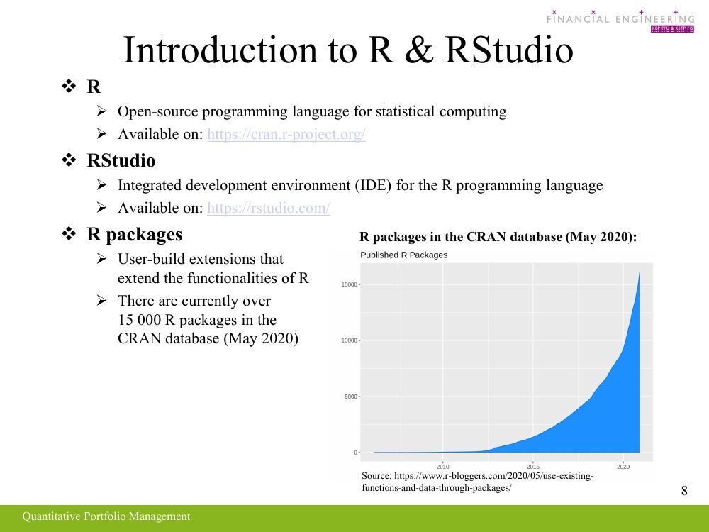
Slajdy srovnávají hlavní nástroje ve financích (s. 4–5). Pro test si pamatuj hlavně profil R:
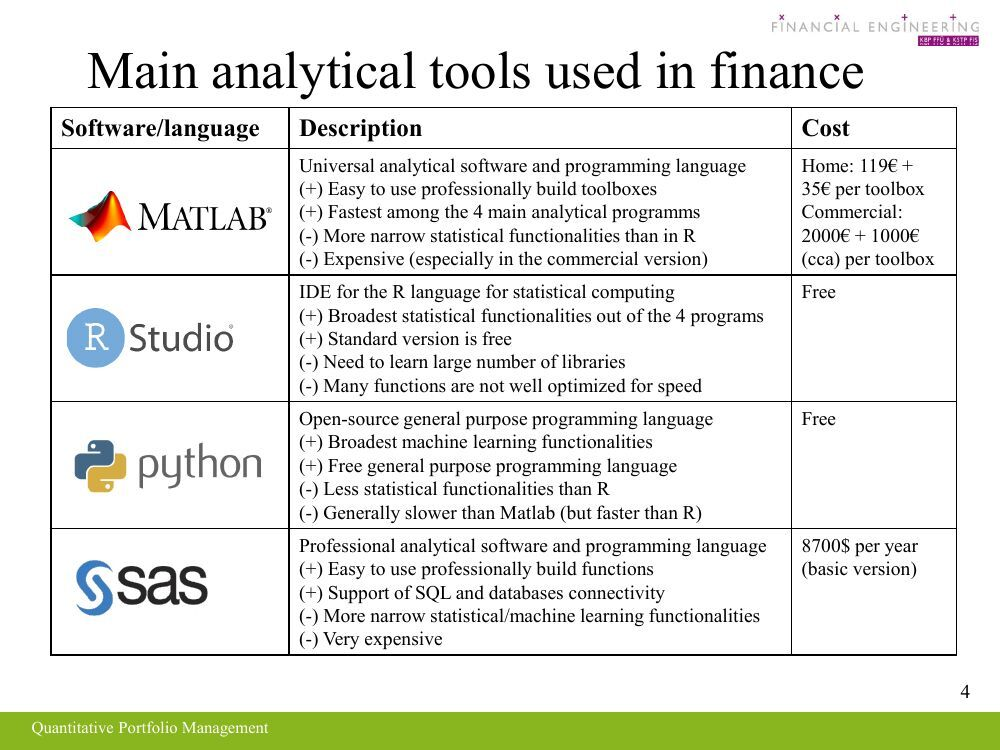
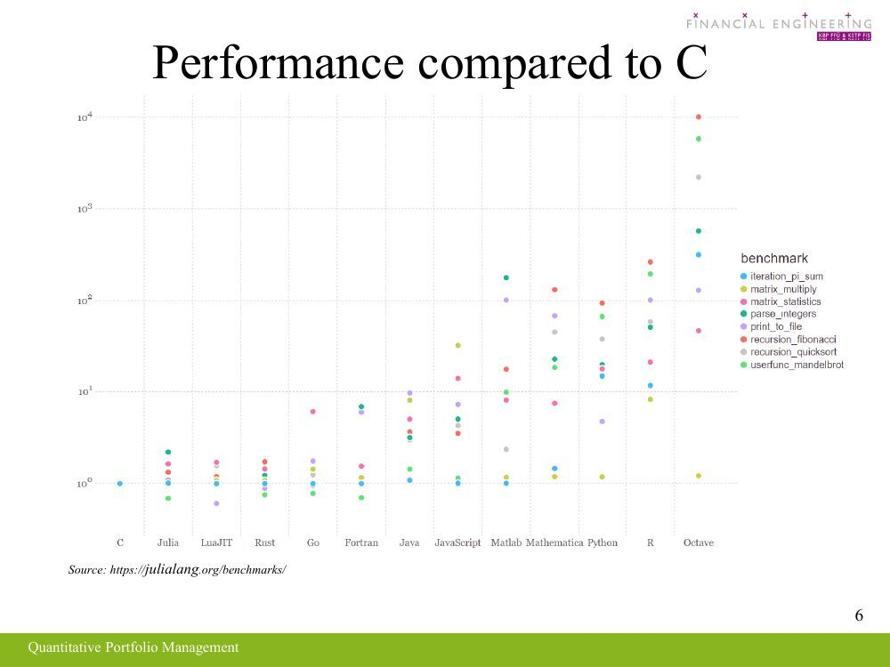
Další nástroje (s. 5): Octave (zdarma, pomalé), Julia (zdarma, rychlá, užší knihovny), Stata, SPSS, EViews (placené, snadnější než R, méně flexibilní), Excel s VBA (jednoduchý, ale pomalý u velkých výpočtů).
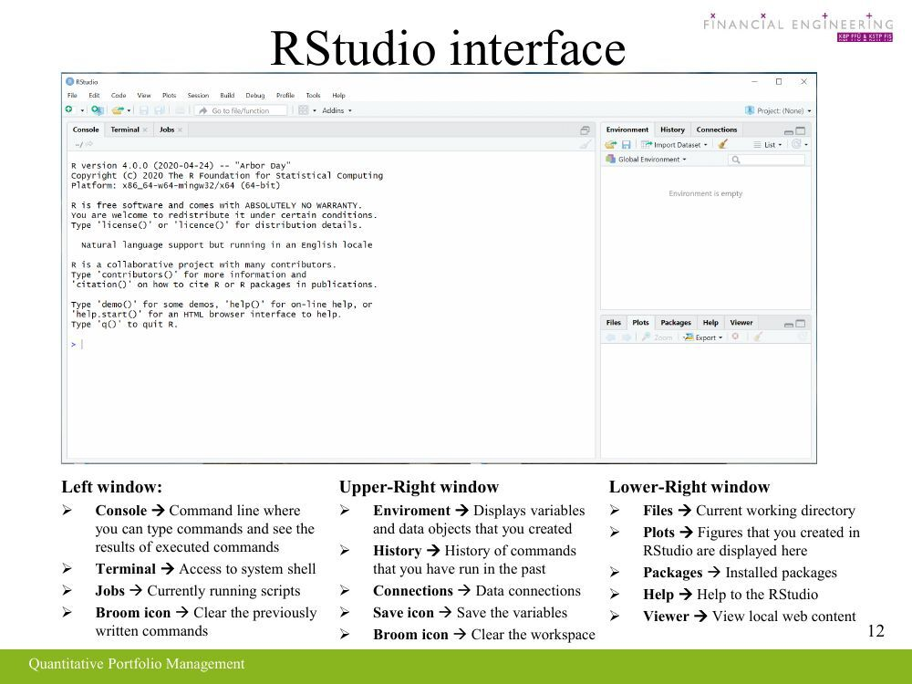
#. Tlačítko Run spustí aktuální řádek nebo označený výběr. Celý skript z pracovního adresáře spustí source('Lecture_01_Script_01.R') (s. 15).# Script 01, příklad 1
print('Hello')
#> [1] "Hello"Základní datové typy (data types) podle s. 17: numeric (reálné číslo s dvojitou přesností, double; výchozí číselný typ), integer (celé číslo; jen pro úsporu paměti), complex, logical (TRUE/FALSE), character (text), raw (bajty). Datové struktury (data structures): vektor (základ, i jedno číslo je vektor délky 1), matice, faktor (omezený počet hodnot), seznam (nejobecnější, může obsahovat i seznamy), data frame (tabulka s různými typy ve sloupcích).
| Zápis | Význam (s. 18) |
|---|---|
x <- 5, 5 -> x, x = 5 | přiřazení (většinou zaměnitelné) |
x <<- 5, 5 ->> x | přiřazení do nadřazeného (parent) prostředí; z funkce do globálního |
5L, 5+2i, 'Hello', TRUE / T | integer, complex, character, logical |
charToRaw('Hello') | raw |
class(x) / typeof(x) | vysokoúrovňový / nízkoúrovňový typ objektu |
length(x) / attributes(x) | délka / metadata |
x <- 5; class(x); typeof(x)
#> [1] "numeric"
#> [1] "double"
x <- 5L; class(x); typeof(x)
#> [1] "integer"
#> [1] "integer"
x <- 5+2i; class(x); typeof(x)
#> [1] "complex"
#> [1] "complex"
x <- 'Hello'; class(x)
#> [1] "character"
x <- charToRaw('Hello'); print(x)
#> [1] 48 65 6c 6c 6fclass() a typeof() se liší: class(5) je "numeric", ale typeof(5) je "double" (Script 06: x[[1]] dává "double" / "numeric"). Číslo bez L je vždy double. 1:3 je integer, ale 1:3 * 2 je už numeric (double); 1:3 * 2L zůstává integer.= × <- × ==. = a <- přiřazují, == porovnává. Zápis x < - 2 (s mezerou, Script 01, „Print“) nepřiřazuje, ale porovná x s číslem -2: pro x = 2 vypíše FALSE a x se nezmění. Zapisuj x <- -2.2147483647L + 1L dá NA a varování o přetečení. Dělení 5L/2L dává double 2.5. Komentář ve Script 01 „Create variable x as logical“ je u řádku x <- 'Hello', což je ve skutečnosti character (chyba v komentáři skriptu).| Skupina | Funkce / operátory (s. 19–21) |
|---|---|
| aritmetika | + - * /, mocnina ^ nebo **, odmocnina x^(1/y), zbytek %%, celočíselné dělení %/% |
| funkce | abs sqrt exp log log10 log(x, base=y) factorial choose(x,y) sign |
| zaokrouhlení | round(x, y) na y míst, floor dolů, ceiling nahoru; trunc (Script 01) ořízne desetinnou část |
| goniometrie | sin cos tan asin acos atan sinh cosh tanh; sinpi(x) = sin(x·π); kotangens není: 1/tan(x) |
| porovnání | < > <= >= == != |
| logika | ! NOT, & AND, | OR (po prvcích), && || (jen jednotlivé hodnoty), xor(x,y), all(), any(), isTRUE() |
| speciální hodnoty | Inf, -Inf, NaN, NA; testy is.infinite, is.nan, is.na |
| pomocné (s. 22) | print, NULL, rm(x), rm(list=ls()), exists("x"), Sys.time(), Sys.Date(), ?NAME, source(), install.packages(), library(), sessionInfo() |
Vstupy x, y mohou být čísla, vektory i matice; operace se pak provádí po prvcích (element-wise) (s. 19, 21).
19 %% 5; 19 %/% 5; -19 %/% 5; -19 %% 5
#> [1] 4
#> [1] 3
#> [1] -4
#> [1] 1
choose(10, 4) # kombinace: 10!/(4!·6!)
#> [1] 210
x <- 1.555
round(x); floor(x); ceiling(x); trunc(x); round(x, 2)
#> [1] 2
#> [1] 1
#> [1] 2
#> [1] 1
#> [1] 1.55
sin(pi) # není 0 kvůli nepřesnosti pi
#> [1] 1.224647e-16NaN (not a number) je výsledek 0/0 a Inf/Inf; NA (not available) je obecně chybějící nebo chybná hodnota (s. 20).is.na() dá TRUE pro NA i NaN; is.nan() jen pro NaN.NULL je „prázdno“; při spojení s c() zmizí (Script 01).0/0; Inf/Inf; 1/0
#> [1] NaN
#> [1] NaN
#> [1] Inf
sqrt(-1) # varování "NaNs produced"
#> [1] NaN
sqrt(-1+0i) # komplexní výsledek
#> [1] 0+1i
is.nan(NA); is.na(NaN)
#> [1] FALSE
#> [1] TRUE
c(NULL, NA, NaN, 2, 3)
#> [1] NA NaN 2 3
F & NA; T & NA; T | NA
#> [1] FALSE
#> [1] NA
#> [1] TRUE
NA == NA; isTRUE(NA)
#> [1] NA
#> [1] FALSENA dá NA (NA == NA je NA, ne TRUE; test je is.na()). Výjimky: FALSE & NA je FALSE, TRUE | NA je TRUE. mean(c(1,NA,3)) je NA, dokud nepřidáš na.rm=TRUE. if (NA) skončí chybou. Proto isTRUE() (nevektorové, NA → FALSE). Odmocnina ze záporného reálného čísla dá NaN, ne imaginární číslo.is.NaN() a is.NA(), ale správně je is.nan() a is.na() (verze s velkými písmeny skončí chybou could not find function). Na s. 21 je u „Is FALSE“ uvedeno isTRUE(y), správně je isFALSE(); na s. 22 je setws, správně setwd("PATH"); %IN% (s. 17) se píše %in%. doplněk: && s vektorem délky > 1 vzal v R 4.1.2 první prvek; novější R (od 4.3) hlásí chybu.Vektor (vector) je základní struktura. Všechny prvky musí mít jeden typ (s. 24). Prázdné vektory: numeric(k), logical(k), character(k).
| Co | Zápis (s. 25–26, Script 02) |
|---|---|
| vlastní vektor | c(1,2,-2,5,3.5,pi), c(T,F), c('A','B'); vestavěné LETTERS, letters, month.name |
| posloupnost | x:y, seq(x,y), seq(x,y,s) (krok s) |
| opakování | rep(x,n) (celý vektor n×), rep(x,each=n) (každý prvek n×) |
| indexace | x[i], x[i:j], x[c(i,j,k)], x[-i] (všechno kromě i-tého), x[c(T,F,T)] (logický) |
| po prvcích | x+y, x*y, x/y, x^y |
| vnitřní / vnější součin | x %*% y (skalár) / x %o% y (matice) |
| sloučení, délka | c(x,y), length(x) |
| souhrny | sum prod max min; kumulativní cumsum cumprod cummax cummin; rozdíly diff |
| řazení | sort(x), sort(x, decreasing=TRUE), rank(x) (pořadí prvků), order(x) (indexy pro seřazení) |
| výběr | unique, head(x,n), tail(x,n), sapply(x,FUN) |
| logické | x %in% y (logický vektor délky x), which(x) (indexy TRUE), all, any |
z <- c(10, 20, 30, 40, 50)
z[2]; z[2:4]; z[c(1,3,5)]; z[-3]; z[c(F,T,F,T,F)]
#> [1] 20
#> [1] 20 30 40
#> [1] 10 30 50
#> [1] 10 20 40 50
#> [1] 20 40
seq(20, -20, -5)
#> [1] 20 15 10 5 0 -5 -10 -15 -20
rep(1:3, 3); rep(1:3, each = 3)
#> [1] 1 2 3 1 2 3 1 2 3
#> [1] 1 1 1 2 2 2 3 3 3z[1] je první prvek (ne z[0], ten vrátí prázdný vektor numeric(0)). Index za koncem dává NA (z[6] → NA), ne chybu. Záporný index vyřadí prvek (z[-3]), nemůžeš míchat kladné a záporné.x:y × seq × rep. 1:0 není prázdná posloupnost, ale 1 0 (klesá!), takže for (i in 1:0) proběhne dvakrát (ověřeno: vypíše 1 a 0). Bezpečné je seq_len(n). rep(1:3, 3) opakuje celý vektor, rep(1:3, each=3) každý prvek. seq(1,10,2) končí na 9, protože 11 už je mimo.1:6 + 1:2 dá 2 4 4 6 6 8. Pokud délka delšího není násobkem kratšího, dostaneš jen varování (1:5 + 1:2 → 2 4 4 6 6 a longer object length is not a multiple…), výpočet proběhne. Logický index se recykluje také: z[c(T,F)] vybere každý druhý prvek. Vektor s různými typy se sjednotí na nejobecnější: c(1,"a",TRUE) je "1" "a" "TRUE".z <- c(20, 30, 50, 10, 40)
sort(z); rank(z); order(z)
#> [1] 10 20 30 40 50
#> [1] 2 3 5 1 4
#> [1] 4 1 2 5 3
z[order(-z)[1:3]] # tři největší hodnoty
#> [1] 50 40 30
x <- c(10, 20, 30)
cumsum(x); cumprod(x); diff(x)
#> [1] 10 30 60
#> [1] 10 200 6000
#> [1] 10 10rank(z) říká, na kolikátém místě je každý prvek (prvek 20 je 2. nejmenší → 2). order(z) říká, který index patří na 1., 2., … místo (nejmenší je 10 na pozici 4 → 4). Proto z[order(z)] je to samé co sort(z).x <- c(1, 3, 5); y <- c(1, 2, 3, 4)
x %in% y; y %in% x; which(y %in% x)
#> [1] TRUE TRUE FALSE
#> [1] TRUE FALSE TRUE FALSE
#> [1] 1 3
'%notin%' <- Negate('%in%') # vlastní operátor
x %notin% y
#> [1] FALSE FALSE TRUE
x <- c(1,2,3,4,5); y <- c(2,4,6,8,10)
x * y; x %*% y; sum(x * y)
#> [1] 2 8 18 32 50
#> [,1]
#> [1,] 110
#> [1] 110Pozor na výsledek x %in% y: délka je vždy délka levého vektoru, takže x %in% y a y %in% x se liší. Vnitřní součin x %*% y je ve skutečnosti matice 1×1 (výpis [1,]), nikoli holé číslo.
| Skupina | Funkce (s. 27, Script 02) |
|---|---|
| souhrnné statistiky | mean median var sd, scale(x) (z-skóre), quantile(x), quantile(x, c(0.1,0.5,0.9)) |
| testy a závislost | t.test(x, mu=n), cor(x,y), cor.test(x,y); metody "pearson", "spearman", "kendall" |
| regrese | lm(y~x) s konstantou, lm(y~0+x) bez konstanty, lm(y~x1+x2+x3); summary(fit) |
| normální rozdělení | dnorm (hustota, pdf), pnorm (distribuční funkce, cdf), qnorm (kvantilová funkce) |
| náhodná čísla | rnorm(n, mean, sd), runif(n), rexp(n, p) |
x <- c(1, 2, 3, 4, 5)
sd(x); var(x); scale(x)[, 1]
#> [1] 1.581139
#> [1] 2.5
#> [1] -1.2649111 -0.6324555 0.0000000 0.6324555 1.2649111
dnorm(0); pnorm(1.96); qnorm(0.975)
#> [1] 0.3989423
#> [1] 0.9750021
#> [1] 1.959964
cor(-3:3, (-3:3)^2) # nelineární (nemonotónní) závislost
#> [1] 0pnorm a qnorm jsou navzájem inverzní: qnorm(pnorm(z)) = z.scale(x) počítá (x - mean(x)) / sd(x); skript to ověřuje ručním výpočtem (Script 02).y = rho*x + sqrt(1-rho^2)*rnorm(k) dává korelaci rho mezi standardně normálními x a y. Pearsonova korelace měří lineární závislost, Spearmanova a Kendallova (pořadové) i monotónní nelineární (y = 2 + 3*exp(x)). U nemonotónní závislosti (x^2, sin) vyjde korelace blízko 0, i když závislost existuje.Skript 02 na závěr (bez výpisu v těchto poznámkách, jde o ukázky) srovnává regrese: jednorozměrná lm(y~x), bez konstanty lm(y~0+x), vícerozměrná lm(y ~ x1 + x2), polynomiální, logaritmická a odmocninová, po částech lineární (x2 je nula pro x < 15, jinak x-15), neparametrická lowess a nelineární nls na Gompertzově křivce b1·exp(-b2·exp(-b3·x)). Odnést si: lm(y~x) a lm(y~1+x) je totéž (konstanta je automaticky), lm(y~0+x) konstantu vynechá a dá jiný odhad. doplněk: polynom dobře padne uvnitř vzorku, mimo něj extrapoluje špatně (skript to ukazuje v bloku if (FALSE)).
| Konstrukce (s. 29) | Zápis |
|---|---|
ifelse (vektorová funkce) | z <- ifelse(CONDITION, x, y) |
if, else if, else | if (c1) {…} else if (c2) {…} else {…} (podmínka musí být jedna hodnota TRUE/FALSE) |
for | for (i in 1:k) {…} |
while | while (CONDITION) {…} |
repeat | repeat { … if (CONDITION) break } |
break / next | ukončí cyklus / přeskočí zbytek tohoto kroku |
Kromě ifelse jde o schematický zápis: příkazy if a cykly se v souboru píší na více řádků a závorky { } musí být na správných místech (s. 29). Při psaní v konzoli musí else následovat na stejném řádku jako uzavírací }.
x <- 6
ifelse(x %% 2 == 0, 'Even Number', 'Odd Number') # s. 31
#> [1] "Even Number"
ifelse(c(1,2,3,4) %% 2 == 0, 'E', 'O') # funguje i na vektor
#> [1] "O" "E" "O" "E"
if (x > 0) { # s. 33
print('Positive Number')
} else if (x < 0) {
print('Negative Number')
} else {
print('Zero Number')
}
#> [1] "Positive Number"
k <- 6; x <- 1 # s. 35: k-tý faktoriál
for (i in 1:k) { x <- x * i }
print(x); factorial(k); sum(prod(1:k))
#> [1] 720
#> [1] 720
#> [1] 720Náhodná procházka (random walk) pro cenu akcie (s. 36–39):
Rozepsáním dostaneme součet všech přírůstků od počátku:
Přírůstky jsou nezávislé, takže se střední hodnoty i rozptyly sčítají. Proto cena roste lineárně (drift $\mu$ za den) a rozptyl roste s časem lineárně, směrodatná odchylka s $\sqrt t$. Slajd 39 uvádí, že jde o diskretizovaný aritmetický Brownův pohyb (Arithmetic Brownian Motion): cena roste lineárně (ne exponenciálně) a může se dostat pod nulu. Realističtější procesy (GBM, Heston, SABR) přijdou později.
set.seed(42)): průměr konečné ceny 226,0, směrodatná odchylka 47,5. Sedí.set.seed(1)
S0 <- 100; mju <- 0.5; sigma <- 3; t <- 252
S <- rep(NaN, t + 1) # S[1] odpovídá času t = 0
S[1] <- S0
for (i in 2:(t + 1)) {
S[i] <- S[i-1] + rnorm(1, mju, sigma)
}
plot(S); title('Stock price - Arithmetic Brownian Motion')
# Alternativa bez cyklu (s. 38): kumulativní součet přírůstků
set.seed(1)
S2 <- c(S0, S0 + cumsum(rnorm(t, mju, sigma)))
all.equal(S, S2); length(S2); round(S2[c(1, 2, 253)], 3)
#> [1] TRUE
#> [1] 253
#> [1] 100.000 98.621 244.257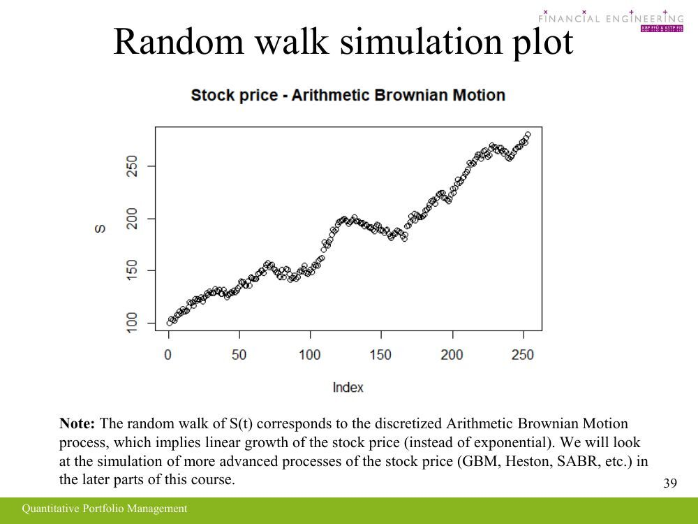
cumsum kratší a rychlejší (vektorová operace). Cyklus for potřebuješ, když další hodnota závisí na předchozí složitěji (např. AR proces) (s. 38). Cyklus a cumsum dávají se stejným set.seed stejný výsledek (liší se jen o zaokrouhlení, all.equal je TRUE).T × t na slajdu 37. Slajd definuje T <- 252, ale dál používá t. V R se velikost písmen rozlišuje; t je zároveň funkce (transpozice), takže bez předchozí definice t skončí rep(NaN, t+1) chybou non-numeric argument to binary operator (ověřeno). Ve Script 03 je správně t <- 252. Slajd 37 má také mju <- 0.1, skript 0.5; graf na s. 39 (konec kolem 280) odpovídá spíš skriptu (nejasnost: slajd a skript se liší).for + break (s. 41): přidá se podmínka defaultu (cena ≤ 0), vypíše se den a cyklus se ukončí. while (s. 43): běží, dokud je cena mezi 0 a cílovým ziskem PT (profit target = 1000, tedy 10× počáteční cena). repeat (s. 45): běží donekonečna, ukončí ho až break, a hlásí, který z konců nastal.
# for + break: pokles pod nulu (parametry mju = -1, sigma = 8 jsou jen pro ukázku)
set.seed(3)
S0 <- 100; mju <- -1; sigma <- 8; t <- 252
S <- rep(NaN, t + 1); S[1] <- S0
for (i in 2:(t + 1)) {
S[i] <- S[i-1] + rnorm(1, mju, sigma)
if (S[i] <= 0) {
print(paste('Company defaulted on day', i - 1))
break
}
}
#> [1] "Company defaulted on day 55"
sum(is.nan(S)) > 0 # zbytek vektoru zůstal NaN
#> [1] TRUE
# repeat-break s cílem PT (parametry Script 03: mju = 0.5, sigma = 3)
set.seed(7)
PT <- 1000; S <- 100; Si <- 100; i <- 0
repeat {
i <- i + 1
Si <- Si + rnorm(1, 0.5, 3)
S <- c(S, Si)
if (Si <= 0) { print(paste('Company defaulted on day', i)); break
} else if (Si >= PT) { print(paste('Company reached PT on day', i)); break }
}
#> [1] "Company reached PT on day 1768"while a repeat předem nevíš, kolik kroků proběhne; špatná podmínka znamená nekonečný cyklus. V while ((Si>=0) & (Si<=PT)) se používá & (jedna hodnota), v podmínkách if je správné i &&. Postupné S <- c(S, Si) zvětšuje vektor v každém kroku (pomalé u velkých simulací); for se slajdu 37 předalokuje rep(NaN, t+1). Počet kroků se mezi spuštěními liší, dokud nenastavíš set.seed.name <- function(x) OPERATIONS(x); standardní s { } na více řádcích a s podmínkami či cykly (s. 47).function(x, x0=0, k=1, L=1); když argument nezadáš, použije se výchozí.return(z) vrací jedinou hodnotu (více výstupů přes seznam, viz níže); alternativa z <<- y (parent assignment) změní proměnnou v globálním prostředí.Příklad: logistická funkce a její zobecnění (s. 49–54):
Parametry: $x_0$ je střed sigmoidy (sigmoid midpoint; zde je hodnota $L/2$), $k$ strmost křivky (steepness), $L$ maximální hodnota (maximum value).
mylogfun <- function(x) 1/(1 + exp(-x)) # inline
mylogfun(1); mylogfun(c(-5, 0, 5))
#> [1] 0.7310586
#> [1] 0.006692851 0.500000000 0.993307149
mylogfun2 <- function(x, x0 = 0, k = 1, L = 1) { # standardní + výchozí hodnoty
z <- L / (1 + exp(-k * (x - x0)))
return(z)
}
mylogfun2(1) # výchozí parametry
#> [1] 0.7310586
mylogfun2(1, 2, 3, 5) # x0 = 2, k = 3, L = 5
#> [1] 0.2371294
mylogfun2(1, k = 3); mylogfun2(0, L = 5); mylogfun2(2, 2)
#> [1] 0.9525741
#> [1] 2.5
#> [1] 0.50.2371294. Slajd 53 uvádí 0.237194; ta poslední číslice vypadá jako překlep (výpočet dává 0,23713). Sigmoida v $x=x_0$ má hodnotu $L/2$: mylogfun2(2, 2) = 0,5 a mylogfun2(0, L=5) = 2,5.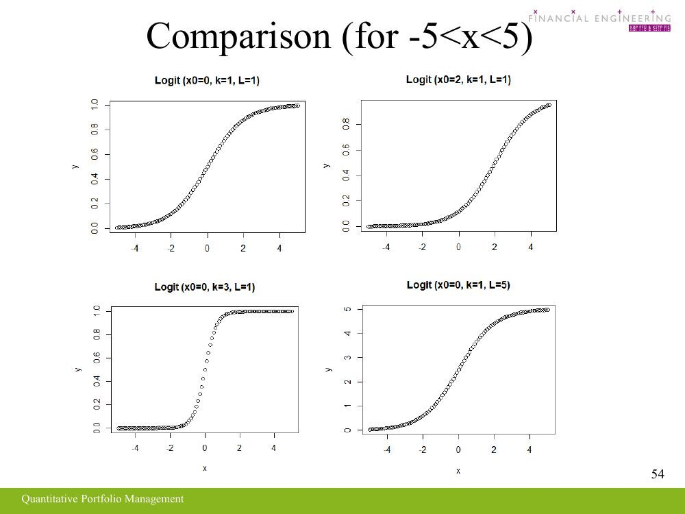
myfibonacci <- function(k) { # s. 56: Fibonacciho posloupnost řádu k
fibonacci <- numeric(k + 1) # začíná se nultým členem
for (i in 1:(k + 1)) {
if (i == 1) {
fibonacci[i] <- 0
} else if (i == 2) {
fibonacci[i] <- 1
} else {
fibonacci[i] <- fibonacci[i-1] + fibonacci[i-2]
}
}
return(fibonacci)
}
myfibonacci(15)
#> [1] 0 1 1 2 3 5 8 13 21 34 55 89 144 233 377 610Rekurence: $F_0=0,\ F_1=1,\ F_n=F_{n-1}+F_{n-2}$ pro $n>1$. Délka vektoru je $k+1$, protože R indexuje od 1: první prvek je $F_0$, takže fibonacci[i] je $F_{i-1}$. Script 04 spouští i k=10000 a poznamenává, že většina čísel se zaokrouhlí na Inf: v double přeteče posloupnost za $F_{1476}\approx1{,}3\cdot10^{308}$ (ověřeno, $F_{1477}$ je Inf).
Parent assignment (s. 57–58): do funkce se přidá měření času (Sys.time() před a po výpočtu) a rozdíl se uloží do globální proměnné příkazem t <<- t2 - t1.
counter <- function(x) { x <- x+1; return(x) } volané s a <- 5 vrátí 6, ale a zůstane 5. Globální proměnnou změní teprve <<- (zz <<- 99 uvnitř funkce nastaví globální zz na 99). Funkce vrací poslední vyhodnocený výraz, i bez return; přiřazení jako poslední příkaz (h2 <- function(x) { y <- x*2 }) vrátí hodnotu neviditelně (výsledek se nevypíše, dokud ho nezabalíš do print()). Jméno t pro čas ve skriptu překryje obyčejnou proměnnou, ne funkci t() (transpozice), ta dál funguje.Matice (matrix) jsou vektory poskládané do sloupců či řádků; všechny prvky mají jeden typ (s. 60). R plní matici po sloupcích (byrow=TRUE změní na po řádcích).
| Co | Zápis (s. 61–62, Script 05) |
|---|---|
| vytvoření | matrix(nrow=k, ncol=q) (samé NA), matrix(x, k, q), diag(k) (jednotková), diag(v) (diagonála z vektoru), cbind(x,y) (po sloupcích), rbind(x,y) (po řádcích) |
| rozměry | dim(x), nrow(x), ncol(x), length(x) (počet prvků), diag(x) (diagonála), as.vector(x) |
| indexace | x[i,j], x[i] (po sloupcích), x[i,] řádek, x[,j] sloupec, x[-i,], x[,c(i,j)] |
| jména | rownames(m) <- c('a','b'), colnames(m) <- c('A','B','C'), m['b',], m[,'B'] |
| po prvcích | x+y, x-y, x*y, x/y, ^, log, exp |
| maticové násobení | x %*% y (součin matic), x %o% y (vnější součin), crossprod(x,y) = x'y, crossprod(x) = x'x |
| lineární algebra | t(x) transpozice, solve(x) inverze, solve(A,b) řeší $Az=b$, ginv (balíček MASS), eigen, svd, chol, qr |
| sumarizace | rowSums, colSums, rowMeans, colMeans, apply(x,1,FUN) po řádcích, apply(x,2,FUN) po sloupcích |
z <- matrix(1:6, 2, 3)
z
#> [,1] [,2] [,3]
#> [1,] 1 3 5
#> [2,] 2 4 6
z[1, 2]; z[2, ]; z[, 2]; z[5] # z[5]: po sloupcích
#> [1] 3
#> [1] 2 4 6
#> [1] 3 4
#> [1] 5
z[-2, ] # bez 2. řádku (vektor!)
#> [1] 1 3 5
rownames(z) <- c('a', 'b'); colnames(z) <- c('A', 'B', 'C')
z['b', ]; z[, 'B']
#> A B C
#> 2 4 6
#> a b
#> 3 4
x <- c(1,2,3); y <- c(4,5,6)
cbind(x, y)
#> x y
#> [1,] 1 4
#> [2,] 2 5
#> [3,] 3 6
rowSums(matrix(1:6, 2, 3)); apply(matrix(1:6, 2, 3), 2, max)
#> [1] 9 12
#> [1] 2 4 6* × %*%. * násobí po prvcích (matice musí mít stejné rozměry), %*% je maticový součin (počet sloupců levé = počet řádků pravé). Pro x = matrix(1:9,3,3) a y = matrix(10:18,3,3) je (x*y)[1,1] = 10, ale (x %*% y)[1,1] = 138 (= 1·10+4·11+7·12). Při %*% mezi vektory se vektor chová jako řádek či sloupec podle potřeby: x %*% (1:3) dá sloupec 30 36 42, (1:3) %*% x řádek 14 32 50; špatné rozměry (c(1,2,3) %*% c(1,2)) končí chybou non-conformable arguments. x %o% y vytvoří pro dvě matice 3×3 pole 3×3×3×3.z[2,] či z[,2] vrací vektor (rozměr se zahodí), z[i] počítá po sloupcích. length(z) je počet všech prvků (6), ne řádků. solve(x) selže u singulární matice (např. matrix(c(1,2,2,4),2,2): system is exactly singular). V ukázce slajdu 61 jsou překlepy v názvech řádků (c('a','b','b') místo a, b, c).Model lineární regrese (s. 63): $y_i = b_0 + b_1 x_{i,1} + \dots + b_k x_{i,k} + \varepsilon_i$. Ve vektorovém tvaru $y_i = \mathbf b'\mathbf x_i + \varepsilon_i$ a pro celý dataset v maticovém tvaru:
Zde $\mathbf y$ je vektor $N\times1$, $\mathbf X$ matice pozorování (řádek je $\mathbf x_i'=[1,x_{i,1},\dots]$; první sloupec jsou jedničky pro konstantu) a $\boldsymbol\varepsilon$ vektor chyb. Odhad metodou nejmenších čtverců (OLS, ordinary least squares) minimalizuje součet čtverců reziduí:
Dosazením $\mathbf y=\mathbf X\mathbf b+\boldsymbol\varepsilon$ vyjde $\hat{\mathbf b}=\mathbf b+(\mathbf X'\mathbf X)^{-1}\mathbf X'\boldsymbol\varepsilon$: odhad se od pravých parametrů liší o šum, který se s rostoucím $N$ zmenšuje. V R: solve(t(X) %*% X) %*% t(X) %*% y (s. 64).
solve(XtX) %*% Xty i coef(lm(y2 ~ c(1,2,3))) dávají 0.6666667 a 1.5. Sedí.set.seed(123)
b <- c(1.2, 0.9, -0.7) # skutečné parametry (1. je konstanta)
sigma <- 0.3; k <- length(b); N <- 10000
X <- matrix(rnorm((k-1) * N), nrow = N, ncol = k-1) # x_i ~ N(0,1)
X <- cbind(rep(1, N), X) # přidání konstanty
e <- rnorm(N) * sigma # šum
y <- X %*% b + e # y = Xb + e
dim(X); dim(y)
#> [1] 10000 3
#> [1] 10000 1
mylinreg <- function(X, y) {
be <- solve(t(X) %*% X) %*% t(X) %*% y
return(be)
}
be <- mylinreg(X, y); print(as.vector(be))
#> [1] 1.1978757 0.9060182 -0.7009555
comp <- cbind(b, round(be, 4), round(b - be, 4))
colnames(comp) <- c('b', 'be', 'err'); print(comp)
#> b be err
#> [1,] 1.2 1.1979 0.0021
#> [2,] 0.9 0.9060 -0.0060
#> [3,] -0.7 -0.7010 0.0010
fit <- lm(y ~ 0 + X); coef(fit)
#> X1 X2 X3
#> 1.1978757 0.9060182 -0.7009555
coef(lm(y ~ X[, -1])) # konstantu přidá lm sám
#> (Intercept) X[, -1]1 X[, -1]2
#> 1.1978757 0.9060182 -0.7009555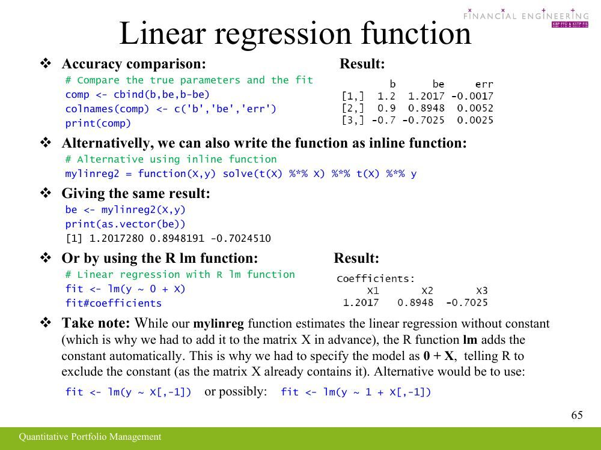
b, odhadů be a chyb err (odhady 1,2017, 0,8948, −0,7025 při 10 000 pozorováních; odchylka v řádu tisícin) a stejný výsledek funkce lm(y ~ 0 + X). Slajd má jiná čísla než moje (jiná náhodná čísla bez společného set.seed); smysl je stejný: odhad padne těsně k pravdě.lm. lm přidává konstantu automaticky, naše mylinreg ne (proto jsme do X přidali sloupec jedniček). Matice X už jedničky obsahuje, takže lm(y ~ 0 + X) konstantu vynechá (slajd 65). Ekvivalentní jsou lm(y ~ X[,-1]) a lm(y ~ 1 + X[,-1]). Chyba: lm(y ~ X) by měla konstantu dvakrát (vestavěnou a sloupec jedniček) a první koeficient u sloupce jedniček vyjde NA (dokonalá kolinearita, ověřeno). y jako X %*% b je matice N×1, ne obyčejný vektor.X %*% b spočítá všech N rovnic najednou. Vzorec $(\mathbf X'\mathbf X)^{-1}\mathbf X'\mathbf y$ se napíše na jeden řádek a stejný kód funguje pro libovolný počet vysvětlujících proměnných. Tentýž princip se použije později v optimalizaci portfolia a u faktorových modelů.Seznam (list) obsahuje prvky libovolných typů i struktur (včetně dalších seznamů); prvky nemusí mít stejný typ (s. 67). Data frame je tabulka; každý sloupec má jeden typ, různé sloupce různé (s. 69).
| Co | seznam w (s. 67) | data frame w (s. 69) |
|---|---|---|
| vytvoření | list(x,y,z), list('n'=x,…) | data.frame(x,y,z) |
| část (výsledek je seznam / data frame) | w[i], w['x'] | w[i], w['x'], w[i,] (řádek) |
| prvek (výsledek je vektor / hodnota) | w[[i]], w$x | w[[i]], w[,i], w$x |
| jména | names(w), names(w) <- c(…) | totéž |
| spojení | c(x,y) (spojí prvky obou seznamů) | rbind(x,y) po řádcích, cbind(x,y) po sloupcích |
x <- list(5, 3L, 2+1i, NULL, 'Hello', TRUE, c(3,6,9), matrix(1:9,3,3))
y <- x[1]; print(y); typeof(y); class(y) # část seznamu
#> [[1]]
#> [1] 5
#>
#> [1] "list"
#> [1] "list"
z <- x[[1]]; print(z); typeof(z); class(z) # prvek seznamu
#> [1] 5
#> [1] "double"
#> [1] "numeric"
x[[7]][2]; x[[7]][2] <- 12; print(x[7]) # prvek uvnitř prvku
#> [1] 6
#> [[1]]
#> [1] 3 12 9
#>
w <- list(list(10,20,30), list('Hello', NULL, c(5,10,15)))
w[[1]][[3]]; w[[2]][[2]]; w[[2]][[3]][1]
#> [1] 30
#> NULL
#> [1] 5
v <- c(list(10,20,30), list('Hello', NULL, c(5,10,15)))
length(v); length(w) # c() nespojí do seznamu seznamů
#> [1] 6
#> [1] 2[ ] × [[ ]] × $. x[1] vrací seznam s jedním prvkem (typeof i class = "list"); x[[1]] vrací samotný prvek ("double", "numeric"). w$x je totéž co w[["x"]], nikoli w["x"]. Neexistující jméno dá NULL (l$zzz). NULL v list(…, NULL, …) zůstane prvkem, ale přiřazení x[[i]] <- NULL prvek smaže (délka seznamu klesne). c(list(…), list(…)) spojí prvky (6), zatímco list(list(…), list(…)) udělá seznam seznamů (2).ID <- c(1,2,3,4,5)
LoanType <- c('Consumer','Mortgage','CreditCard','Consumer','Consumer')
LoanSize <- c(100000,1000000,50000,70000,20000)
Data <- list('ID'=ID, 'LoanType'=LoanType, 'LoanSize'=LoanSize)
DataF <- data.frame(ID, LoanType, LoanSize)
Data$LoanSize[3:5]
#> [1] 50000 70000 20000
class(Data[3]); class(Data[[3]]); Data[[3]][3]
#> [1] "list"
#> [1] "numeric"
#> [1] 50000
typeof(DataF); class(DataF) # data frame je typ seznamu
#> [1] "list"
#> [1] "data.frame"
class(DataF[3]); class(DataF[[3]]); class(DataF[,3]); class(DataF[3,])
#> [1] "data.frame"
#> [1] "numeric"
#> [1] "numeric"
#> [1] "data.frame"
DataF[3, ]
#> ID LoanType LoanSize
#> 3 3 CreditCard 50000
as.character(DataF[3, ])
#> [1] "3" "CreditCard" "50000"
DataF$LoanSize[DataF$LoanType == 'Consumer'] # filtr podle jiného sloupce
#> [1] 1e+05 7e+04 2e+04Výhoda data frame oproti seznamu: lze vybírat i podle řádků (DataF[3,]) a sloupce mají stejnou délku. Řádek smíšeného typu lze převést na vektor jen jako text (as.character); as.numeric(DataF[3,]) dá 3 NA 50000 s varováním, protože „CreditCard“ není číslo (Script 06).
DataF['LoanSize'] a DataF[3] jsou data frame, DataF$LoanSize, DataF[[3]] a DataF[,3] vektor (s. 69, Script 06: class(x) je "numeric", class(y) je "data.frame"). Výběr jednoho řádku je vždy data frame.Funkce vrací jednu hodnotu, proto se více výstupů zabalí do seznamu (Script 06, příklad 3). Rozšířená mylinreg počítá kromě koeficientů i standardní chyby, t-hodnoty a p-hodnoty:
Zde $n$ je počet pozorování a $k$ počet sloupců $\mathbf X$ (včetně konstanty). V kódu: XXi <- solve(t(X) %*% X), s <- sqrt(sum(res^2)/(n-k)), se <- sqrt(diag((s^2)*XXi)), p <- 2*(1-pt(abs(t), n-k)). Výsledek je Results <- list('coeff'=be, 'se'=se, 't'=t, 'p'=p, 'stats'=stats, 'fit'=yf, 'res'=res, 'sigma'=s, 'tcalc'=tcalc) a čte se přes Results$coeff, Results$p, Results$stats. Kontrola proti summary(lm(y ~ 0 + X)) by měla dát stejné hodnoty. Pro náš velký vzorek vyšlo $s \approx 0{,}3001$ (skutečné $\sigma=0{,}3$).
Osnova na s. 3 uvádí ještě „Loading data into R“ a „Charts and figures“, ale prezentace končí na s. 69 (data frame). Načítání dat a grafy se ve slajdech neprobírají; ve skriptech se z grafiky objevují jen plot, lines, hist, title, legend a abline. doplněk: tidyverse a tidyquant přijdou v dalších přednáškách (Script 02, Lecture 2); v tomto tématu se nevyžadují.
5L), complex, logical, character, raw. class() × typeof(): 5 je "numeric" / "double". Struktury: vektor, matice, faktor, seznam, data frame.<- a = přiřazují, == porovnává, x < - 2 je porovnání. <<- přiřazuje do nadřazeného prostředí.x[-i] vynechá prvek; mimo rozsah je NA. Operace jsou po prvcích a kratší vektor se recykluje (1:6 + 1:2). 1:0 je 1 0, ne prázdno; používej seq_len.NA se šíří (NA == NA je NA, test is.na); FALSE & NA je FALSE; 0/0 je NaN; && a || jen pro jednu hodnotu; is.nan() a is.na() malými písmeny.sort, rank (pořadí prvků), order (indexy). x %in% y je logický vektor délky x, which dá indexy TRUE. rep(x,n) × rep(x,each=n).mean median var sd quantile scale cor lm t.test, dnorm pnorm qnorm, rnorm runif rexp. lm(y~x) má konstantu, lm(y~0+x) ne. Pearson měří jen lineární závislost.ifelse (vektorově), if/else if/else, for, while, repeat + break/next.c(S0, S0+cumsum(rnorm(t,mju,sigma))). Aritmetický Brownův pohyb může jít pod nulu.function(x) …) nebo s { } a return, výchozí argumenty, lokální proměnné, <<- pro globální. Logistická funkce $L/(1+e^{-k(x-x_0)})$: $x_0$ střed, $k$ strmost, $L$ maximum; mylogfun2(1,2,3,5) = 0,2371.* po prvcích × %*% maticový součin, t, solve, crossprod, apply, rowSums. z[2,] vrací vektor.solve(t(X) %*% X) %*% t(X) %*% y; X musí mít sloupec jedniček, lm(y ~ 0 + X) dá totéž.[ ] vrací seznam, [[ ]] a $ prvek. Data frame je seznam sloupců stejné délky; df[3] je data frame, df[[3]] a df[,3] vektor, df[3,] řádek jako data frame. Více výstupů funkce = seznam.Přednáška 13. 10. a 14. 10. · Milan Fičura · zdroj: Introduction to R Packages (1BP453_02_R_Packages.pdf, čísla slajdů v závorkách), skripty Lecture_02_Script_01_Tidyverse_Introduction.R, Lecture_02_Script_02_Tidyquant_Introduction.R, Lecture_02_Script_03_Case_Study_SP500_Crashes.R; výstupy tidyverse částí ověřeny v R (dplyr 1.2.1) na malých vlastních tabulkách
filter, mutate, group_by, summarize, pipe), (2) jak stáhnout ceny přes tq_get a proč se pro výnosy používá sloupec adjusted, (3) jak se počítají prosté a logaritmické výnosy a jak se agregují. Body (2) a (3) jsou základ domácího úkolu 1 (stažení cen přes tq_get, denní log výnosy, měsíční prosté výnosy). Pasáže, které se z nich v úkolu použijí, jsou označeny štítkem DÚ 1.Balíček (package) je knihovna funkcí od uživatelů. V CRAN bylo v květnu 2020 přes 15 000 balíčků (s. 4). Instalace a načtení:
install.packages("tidyverse") # instalace z CRAN (jednou)
library(tidyverse) # načtení do session (při každém spuštění)
tidyquant::tq_get(...) # volání funkce bez načtení balíčku
?filter # nápověda; ??filter = hledání v nápovědě
devtools::install_github("AUTOR/NAZEV") # balíčky mimo CRAN (s. 4)Tři hlavní způsoby práce s tabulkami v R: base R (data frame), tidyverse (tibble, rychlejší a jednodušší) a data.table (nejrychlejší pro velká data) (s. 7). Kurz používá tidyverse, protože na něm stojí tidyquant (s. 7).
| Balíček | K čemu slouží (s. 5, 6, 9, 24) |
|---|---|
tidyverse | sada balíčků pro zpracování, čištění a vizualizaci dat; po library(tidyverse) se načtou readr, tibble, dplyr, tidyr, purrr, ggplot2, stringr, forcats |
dplyr | hlavní balíček pro úpravy dat (filter, mutate, group_by …) |
tidyr | převod mezi „wide“ a „long“ formátem (gather, spread) |
ggplot2 | grafy |
readr, readxl, haven | načítání csv/tsv, Excelu (read_excel) a dat ze SAS/SPSS/Stata (s. 11); readxl a haven se načítají zvlášť |
lubridate | práce s daty a časy (year(), today()) |
quantmod, zoo, xts | finanční časové řady |
tidyquant | spojuje tidyverse s quantmod, zoo, xts, PerformanceAnalytics; stahuje data z Yahoo Finance, FRED, Quandl aj. (s. 6, 24) |
[] zůstává tibblem, tiskne se jen prvních 10 řádků a nemá názvy řádků (s. 10). Převod: as_tibble(x), tvorba tibble("x"=x, "y"=y) (s. 11).mtcars_tbl <- as_tibble(mtcars)
class(mtcars) # [1] "data.frame"
class(mtcars_tbl) # [1] "tbl_df" "tbl" "data.frame"Prohlížení tabulky: head(x, 5) prvních 5 řádků, tail posledních, slice(x, 3:6) řádky 3 až 6, glimpse názvy a typy sloupců, summary souhrnné statistiky, nrow počet řádků (s. 12, skript 1).
X %>% FUNKCE vezme výsledek vlevo a předá ho jako první argument funkci vpravo. Díky tomu se transformace řetězí odshora dolů (s. 10, 13). filter(x, cond) je totéž co x %>% filter(cond).Month, Stock_A, Stock_B, Stock_C). V long formátu je jeden řádek na dvojici (období, akcie) a sloupce jsou Month, Stock, Return. Tidyverse funkce (a data z tq_get) preferují long formát, protože v něm stačí group_by(symbol).Slajdy 14–20 používají vestavěnou tabulku mtcars (auta). Princip je u financí stejný, jen místo aut jsou řádky dny a akcie. Níže je malá vlastní tabulka cen dvou akcií (výstupy ověřeny v R):
px <- tibble(symbol = rep(c("A","B"), each = 4),
date = rep(as.Date(c("2024-01-30","2024-01-31","2024-02-01","2024-02-02")), 2),
adjusted = c(100, 102, 101, 103.02, 50, 49, 51.45, 52.479))
px %>% filter(symbol == "A", adjusted > 100) %>% # řádky akcie A s cenou nad 100
arrange(desc(adjusted)) %>% # seřadit sestupně podle ceny
select(date, adjusted) # ponechat jen 2 sloupce
# date adjusted
# 1 2024-02-02 103.
# 2 2024-01-31 102
# 3 2024-02-01 101filter(X, podmínka) vybere řádky. Více hodnot: cyl %in% c(4,6), negace cyl != 4, kombinace &. Dva filtry za sebou dávají totéž co jeden s & (s. 14; ověřeno: oba tvary vrátí 13 řádků).arrange(X, sloupec) řadí vzestupně, desc() sestupně, lze podle více sloupců arrange(desc(cyl), desc(hp)) (s. 15). Výsledek se uloží jen přiřazením mtcars_s <- ....select(X, sloupce) vybere sloupce; select(-mpg) sloupec odstraní, starts_with("c") vybere podle začátku názvu, everything() přesune zvolené sloupce dopředu (s. 16, skript 1).mutate(X, nový = výraz) vytvoří nebo změní sloupec; nový sloupec lze použít hned v dalším výrazu téhož mutate. transmute udělá totéž, ale ponechá jen nově vytvořené sloupce (s. 17).filter(date >= "2024-02-01") a potom mutate(return = price - lag(price)), první řádek filtrovaného období nemá předchozí cenu a výnos bude NA. Výnosy proto počítej před filtrováním období (stejně to dělá case study: nejdřív mutate výnosů, potom filter(date >= dThreshold), s. 62, 71). Podobně arrange před lag()/cumprod() změní, co je „předchozí“ řádek.group_by(X, sloupec) nezmění vzhled tabulky, ale všechny následující operace (mutate, summarize, slice, filter) se provedou zvlášť v každé skupině. summarize() pak sloučí každou skupinu do jednoho řádku (s. 18, 19). Funkce n() je počet řádků ve skupině, count() je zkratka pro group_by + n.mtcars_tbl %>% group_by(cyl) %>%
summarize(mean_mpg = mean(mpg), sd_mpg = sd(mpg), n = n())
# cyl mean_mpg sd_mpg n
# 1 4 26.7 4.51 11
# 2 6 19.7 1.45 7
# 3 8 15.1 2.56 14
mtcars_tbl %>% group_by(cyl) %>% filter(hp == max(hp)) %>% select(cyl, hp)
# nejsilnější auto v každé skupině: cyl 4 → 113, cyl 6 → 175, cyl 8 → 335
mtcars_tbl %>% group_by(cyl, am) %>% count() # 6 skupin; např. cyl 4, am 1 → n = 8group_by(cyl) %>% slice(1) vezme první řádek každé skupiny, arrange(desc(hp)) %>% slice(3) třetí největší (s. 18; ověřeno: hp 97, 123, 245). Skript 1 ukazuje i top_n(3, hp) (tři největší z každé skupiny).mutate_at(.vars = vars(cyl, am), factor) změní víc sloupců najednou, summarize_at(.vars = vars(mpg, disp), .funs = mean) spočítá průměry víc sloupců najednou (s. 20).group_by + lag): v tabulce z tq_get s více akciemi musí před výpočtem výnosu stát group_by(symbol). Bez něj by první cena akcie B dostala jako „předchozí“ poslední cenu akcie A. Naopak seskupení podle symbol a year (nebo měsíce) před lag() je chyba: v každé skupině se ztratí výnos prvního dne. Ověřeno: při group_by(symbol, month) dostal 1. 2. 2024 hodnotu NA, ačkoli výnos z 31. 1. na 1. 2. do února patří. Slajdy 84, 86, 88 a 90 seskupují před lag podle symbol, year, skript 2 (a správný postup) nejdřív jen podle symbol.summarize): v summarize(volatility = sd(return), skewness = skewness(return), return = sum(return), ...) na s. 94 musí return = sum(return) stát až za výpočty, které používají denní return. Po přepsání už return není denní řada, ale jedno číslo. Ověřeno: obrácené pořadí dá sd(return) = NA.Převod mezi wide a long formátem (s. 21, 22). Příklad ze slajdu 22: tabulka výnosů tří akcií po letech (wide).
untidy_df <- tibble("year" = c(2018,2019,2020), "A" = c(0.1,-0.05,0.15),
"B" = c(0.05,-0.1,0.1), "C" = c(0.2,-0.2,0.3))
tidy_df <- untidy_df %>% gather(stock, return, A:C) # wide -> long
# year stock return (9 řádků)
# 1 2018 A 0.1
# 2 2019 A -0.05
# 3 2020 A 0.15
# 4 2018 B 0.05 ...
untidy_df_2 <- tidy_df %>% spread(stock, return) # long -> wide (zpět na 3 řádky)
u <- tidy_df %>% unite("stock_year", c("stock","year"), sep = "_") # hodnoty "A_2018", ...
u %>% separate(stock_year, into = c("stock","year"), sep = "_") # zpět na 2 sloupcegather(NAME, VALUES, A:C): názvy sloupců A až C se stanou hodnotami nového sloupce stock, jejich obsah se stane sloupcem return.spread(NAME, VALUES) je opačná operace.unite slepí dva sloupce do jednoho, separate jeden rozdělí podle oddělovače.gather a spread jsou ve starším stylu; moderní náhrada je pivot_longer(A:C, names_to = "stock", values_to = "return") a pivot_wider(names_from = stock, values_from = return). Obě dvojice dávají stejný výsledek (ověřeno). Přednáška a skripty používají gather/spread, v testu proto čekej je.Tidyquant spojuje logiku tidyverse s funkcemi z časových a finančních balíčků (quantmod, zoo, xts, PerformanceAnalytics) a obsahuje i řadu funkcí z Excelu (s. 24). Slajd 24 uvádí jako základní funkce tq_get, tq_mutate, tq_transmute, tq_performance a tq_portfolio. Skripty této přednášky používají jen tq_get, tq_index a tq_index_options.
tq_get(SYMBOL, get = ZDROJ, from = DATUM1, to = DATUM2) stáhne online data do tibblu (s. 25). SYMBOL může být i vektor symbolů. Dostupné zdroje vypíše tq_get_options(). Nejčastější (s. 25):
"stock.prices": OHLCV ceny z Yahoo Finance"dividends": dividendy z Yahoo Finance"splits": splity z Yahoo Finance"economic.data": makroekonomická data z FREDlibrary(tidyquant)
symbol <- "AAPL"
tStart <- "2001-01-01"
tEnd <- today()
prices <- tq_get(symbol, get = "stock.prices", from = tStart, to = tEnd)
head(prices)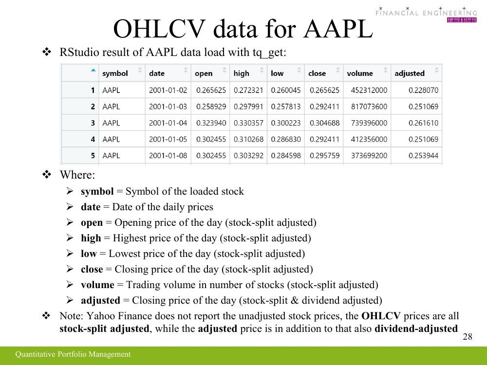
tq_get pro AAPL, první dny roku 2001. Sloupce: symbol, date, open, high, low, close, volume, adjusted. Odnést si: open/high/low/close/volume jsou upraveny o splity, adjusted je navíc upraven o dividendy. Yahoo Finance neukazuje původní neupravené ceny (s. 28).adjusted = zavírací cena upravená o splity i dividendy (s. 28).scale_y_log10()) je exponenciální růst přímka, proto se dlouhodobé ceny kreslí v logaritmu.volumeUSD = volume * close. U AAPL jde v posledních letech o 10 až 40 mld. USD denně.geom_candlestick, s. 33): v jednom grafu open, high, low a close. Používá se v technické analýze (podpory, rezistence, svícové formace, např. „hammer“).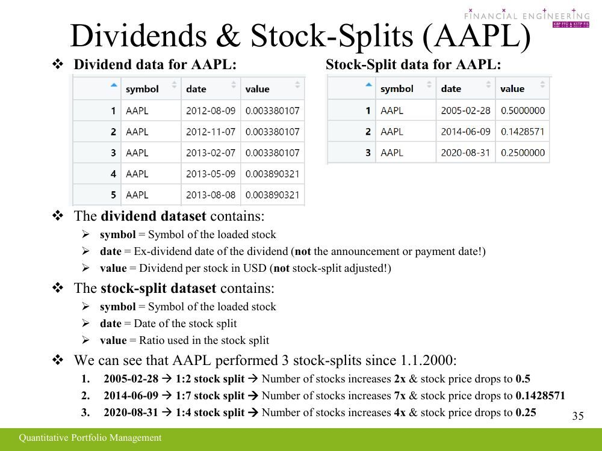
symbol, date, value), vpravo splity (symbol, date, value). Odnést si: date u dividend je ex-dividend datum, ne datum vyhlášení ani výplaty (s. 35). U splitů je value poměr splitu: 0,5 (1:2, 2005), 0,1428571 (1:7, 2014), 0,25 (1:4, 2020).if (FALSE) s komentářem „Not relevant anymore (Yahoo Finance adjusts the dividends automatically)“. Pro práci se skripty tedy dividendy ze tq_get už upravovat nemusíš.value dividend není upravena o splity, skript 2 říká, že ji Yahoo upravuje automaticky. Použij verzi skriptu (novější). Také v cyklu na s. 37 se dělí hodnotou splitu, ačkoli s. 35 ukazuje hodnoty 0,5 / 0,14 / 0,25 (poměr nových ku starým). Při poměru menším než 1 by dělení dividendu zvětšilo. Cyklus proto na zkoušku neber jako přesný návod, důležitá je myšlenka: dividenda se přepočítá na dnešní počet akcií.temp <- prices %>% select(date, close)
dividends2 <- dividends %>%
left_join(temp, by = "date") %>% # připojí cenu ke dni ex-dividendy
mutate(div_yield_pa = (value / close) * 4) # skript 2; slajd 39 má adj_dividend místo valueVýsledky: dividenda AAPL na akcii roste, ale dividendový výnos klesá (2013 až 2017 kolem 2 % p.a., nyní asi 0,6 % p.a.), protože cena rostla rychleji než dividenda (s. 40). Altria (MO) platí vysoký výnos 3 až 10 % p.a.; při aktuální ceně 7 % p.a. (s. 42).
V den ex-dividendy akcie obvykle otevře níže, protože firma vyplatila část hodnoty akcionářům. Akcionář tím nic neztrácí: co ztratil na ceně, dostal jako dividendu. Neupravená cena proto výkonnost podhodnocuje (s. 44).
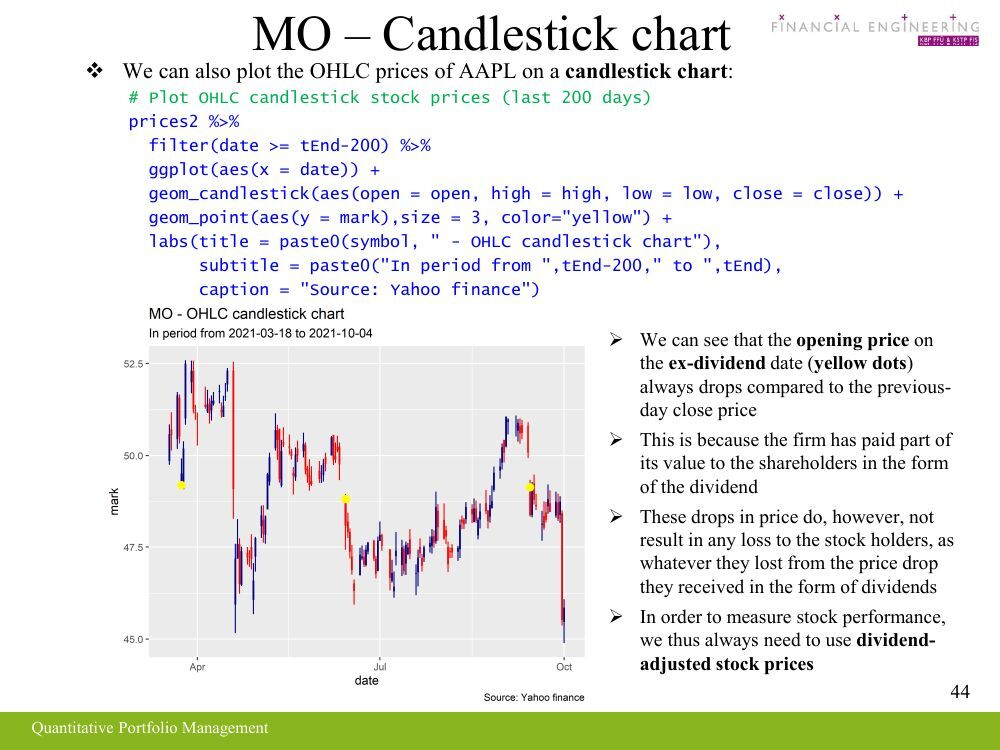
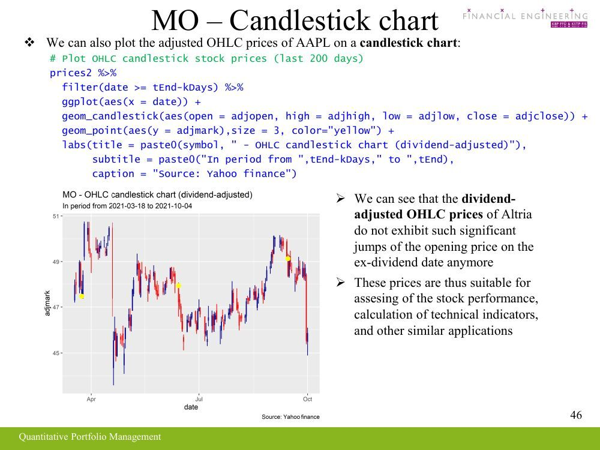
Úprava OHLC (s. 45, skript 2): ceny před každým ex-dividend datem se vynásobí faktorem asi „1 minus dividendový výnos“. Yahoo ho už spočítal pro zavírací cenu, takže faktor stačí vzít jako podíl adjusted / close a použít ho na open, high a low:
prices2 <- prices2 %>%
mutate(adjfactor = adjusted / close,
adjopen = adjfactor * open,
adjhigh = adjfactor * high,
adjlow = adjfactor * low,
adjclose = adjusted)adjusted. Sloupec close je upraven jen o splity (Yahoo neukazuje zcela neupravené ceny, s. 28), takže obsahuje ex-dividend poklesy. close se naopak používá pro objem v USD (volume * close) a pro dividendový výnos v den ex-dividendy (s. 32, 39). U akciových indexů (^GSPC) Yahoo dividendové úpravy neobsahuje (s. 50): výnosy indexu jsou „bez dividend“, u ETF (SPY) ano.DÚ 1 Tato část je základ domácího úkolu.
adjusted):
$$R_t = \frac{P_t}{P_{t-1}} - 1 \qquad\qquad r_t = \ln\frac{P_t}{P_{t-1}} = \ln P_t - \ln P_{t-1}$$
Převody: $R_t = e^{r_t} - 1$ a $r_t = \ln(1 + R_t)$ (s. 52, 78, 79).Rozdílový „USD výnos“ adjusted - lag(adjusted) (s. 77) pro analýzu nestačí: velikost pohybů závisí na úrovni ceny, proto je řada výrazně heteroskedastická (rozptyl se mění v čase). Relativní výnosy ji mají mnohem menší, i když zůstává shlukování volatility (s. 78).
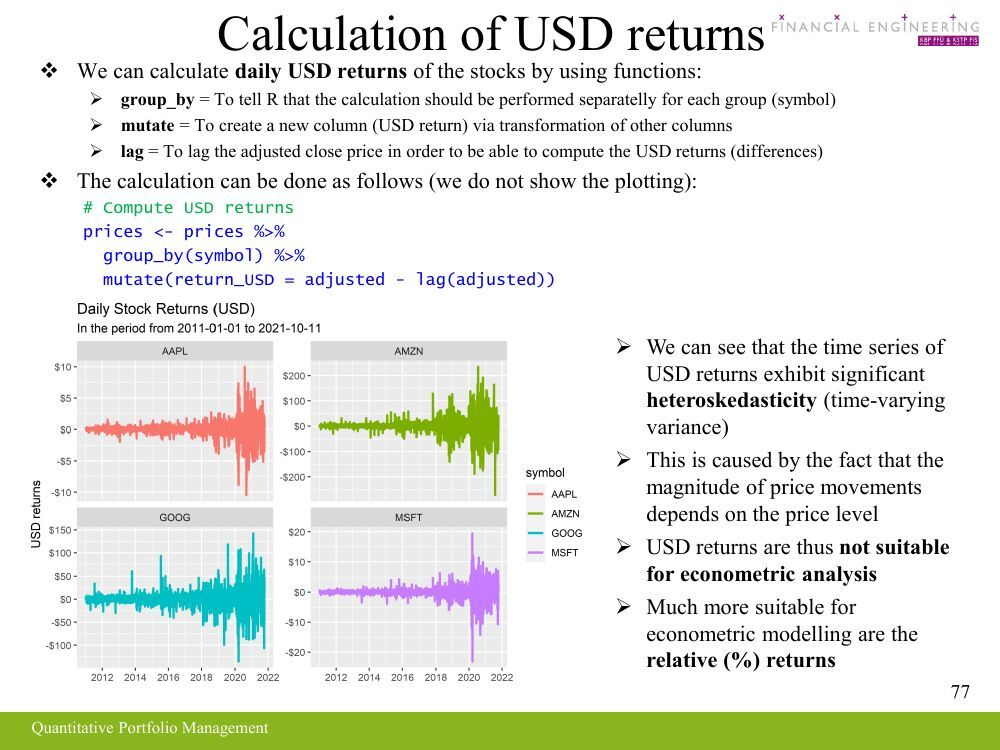
cumlogret = cumsum(logreturn), kumulativní prostý výnos cumreturn = exp(cumlogret) - 1 (s. 80, skript 2).group_by(symbol, month)), ale lag nejdřív počítej v rámci symbol, jinak ztratíš první den každého měsíce (viz výše). (2) První den série nemá výnos (NA), skripty ho nahrazují nulou: ifelse(is.na(logreturn), 0, logreturn). První měsíc tak není úplný (běží od první ceny, ne od konce předchozího měsíce). (3) Součet prostých výnosů ani samotný součet log výnosů není měsíční prostý výnos.tq_get vyžaduje internet. Část od mutate dál jsem ověřil v R na malé tabulce z příkladu výše (A, B): měsíční výnosy A: 2,00 % a 1,00 %, B: −2,00 % a 7,10 %.
library(tidyverse); library(tidyquant); library(lubridate)
prices <- tq_get(c("SPY","EFA","LQD"), get = "stock.prices", from = "2007-05-01", to = "2026-10-31")
monthly <- prices %>%
group_by(symbol) %>% # lag počítat pro každý symbol zvlášť
mutate(logreturn = log(adjusted) - lag(log(adjusted)), # denní log výnos
logreturn = ifelse(is.na(logreturn), 0, logreturn)) %>%
mutate(month = floor_date(date, "month")) %>%
group_by(symbol, month) %>%
summarize(return = exp(sum(logreturn)) - 1, .groups = "drop") # měsíční PROSTÝ výnos
wide <- monthly %>% spread(symbol, return) # long -> wide (měsíc × ETF)
mat <- wide %>% select(-month) %>% as.matrix() # matice pro mean a cov
# colMeans(mat), cov(mat)doplněk: ověřený výstup kroku monthly pro toy data (A, B výše) je A 2024-01 0,0200; A 2024-02 0,0100; B 2024-01 −0,0200; B 2024-02 0,0710; po spread a as.matrix vznikne matice 2 × 2 s průměry sloupců 0,0150 a 0,0255. floor_date je z balíčku lubridate (načítá ho i tidyquant; ve slajdech je v seznamu „additional“, s. 9).
Cíle (s. 48): (1) sestavit datovou sadu největších jednodenních propadů S&P 500, (2) analyzovat očekávaný výnos v den $t+1$ po propadu v den $t$, (3) ověřit statistickou významnost, (4) posoudit „Monday Reversal Effect“. Skript 3.
Stahuje se index ^GSPC od roku 1900 (data od 30. 12. 1927). Výhoda: velmi dlouhá řada. Nevýhody: Yahoo u indexů neupravuje o dividendy a index není přímo obchodovatelný (lze aproximovat CFD, ETF, futures). Alternativa: ETF SPY (řada od zhruba 1993, upravená o dividendy, obchodovatelná) (s. 50, 51).
data <- tq_get("^GSPC", get = "stock.prices", from = "1900-01-01", to = today())
data <- data %>%
mutate(logprice = log(adjusted),
logreturn = logprice - lag(logprice, 1),
logreturn = ifelse(is.na(logreturn), 0, logreturn),
return = exp(logreturn) - 1, # prostý výnos
cumreturn = cumprod(1 + return), # kumulace (násobení)
drawdown = (cumreturn / cummax(cumreturn)) - 1) # propad od historického maximacumreturn (hodnota 1 jednotky investované na začátku). V kódu cummax je běžící maximum. Drawdown je vždy $\le 0$, na novém maximu je 0.return: 0 (první den doplněn nulou), $+10\ \%$, $-10\ \%$, $+5{,}56\ \%$, $-13{,}88\ \%$.cumreturn = 1; 1,10; 0,99; 1,045; 0,90.cummax = 1; 1,10; 1,10; 1,10; 1,10.drawdown = 0; 0; $0{,}99/1{,}10-1 = -10{,}0\ \%$; $-5{,}0\ \%$; $0{,}90/1{,}10-1 = -18{,}2\ \%$.cumreturn = cumprod(1+return) jmenuje „cumulative return“, ale je to hodnota investice (začíná na 1 = 100 %). Kumulativní výnos je tato hodnota minus 1. Ve skriptu 2 (s. 80) je cumreturn = exp(cumlogret) - 1 už skutečný výnos (začíná na 0). Pozor na tento rozdíl ve významu stejného názvu.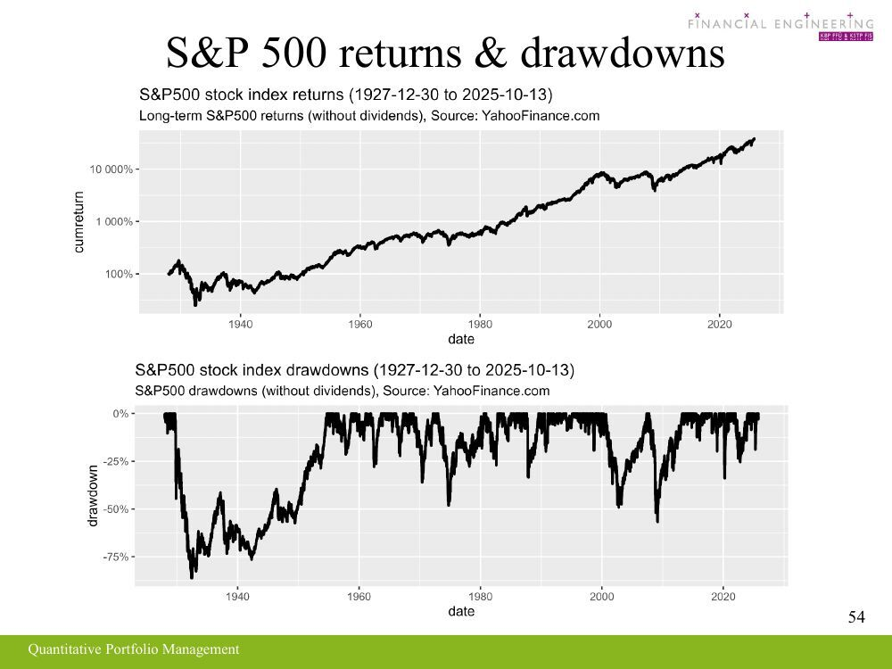
data <- data %>%
mutate(target = lead(return, default = 0), # výnos v t+1
lagreturn = lag(return, default = 0), # výnos v t-1
lagreturn2 = lag(return, 2, default = 0), # výnos v t-2
lagdrawdown = lag(drawdown, default = 0), # drawdown v t-1
wday = weekdays(date)) # den v týdnu
dataS <- data %>% select(date, wday, lagdrawdown, drawdown, lagreturn2, lagreturn, return, target) %>%
arrange(return) # od největšího propadu
threshold <- -0.05
temp <- dataS %>% filter(return <= threshold) # propady o 5 % a více
nCrash <- nrow(temp) # 87lead() posune řadu o jeden den dopředu (následující den), lag() dozadu. target je výnos dne $t+1$, jehož střední hodnotu zkoumáme (s. 56).
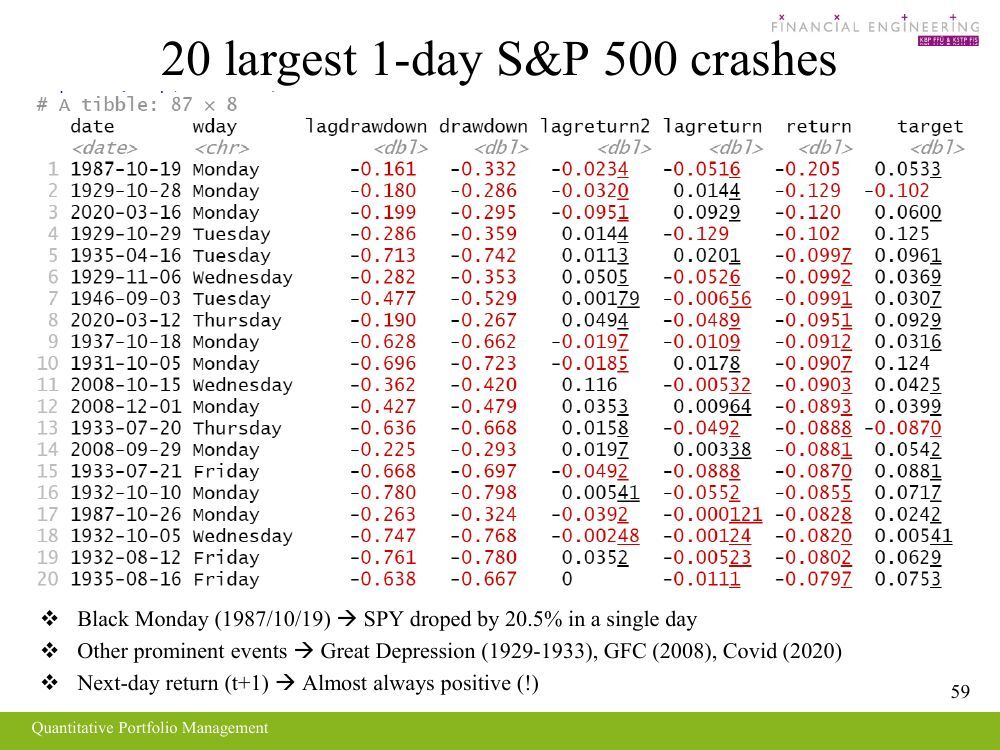
target (výnos následujícího dne) je téměř vždy kladný (s. 59). Výjimky v horní dvacítce: 28. 10. 1929 (další den 29. 10. dalších −10,2 %) a 20. 7. 1933 (target −8,7 %).csummary spočítá počet pozorování $n$, průměr $\mu$ (mju), směrodatnou odchylku $\sigma$, t-statistiku a p-hodnotu: $$t = \frac{\mu}{\sigma/\sqrt{n}}, \qquad p = 2\,(1 - F_{t,n-1}(|t|)).$$csummary <- function(temp) {
temp %>% summarize(nObs = n(), mju = mean(target), sigma = sd(target),
tStat = mju / (sigma / sqrt(nObs)),
pValue = 2 * (1 - pt(abs(tStat), df = nObs - 1)))
}
csummary(temp) # alternativně t.test(temp$target)| Vzorek (propad ≤ −5 %) | $n$ | průměr $t+1$ | $\sigma$ | t | p-hodnota |
|---|---|---|---|---|---|
| celá historie od 1927 (s. 61) | 87 | 1,32 % | 5,30 % | 2,33 | 2,22 % |
| od 1990 (s. 62) | 22 | 2,73 % | 3,85 % | 3,33 | 0,319 % |
Robustnost: výsledek se přepočítá na datech od 1990 (trhy byly efektivnější). Průměr je vyšší a významnější, přestože je jen 22 pozorování (s. 62). Hlavní události: dot-com bublina 2000, krize 2008, Covid 2020, cla 2025 (s. 63). T-test předpokládá normální a nezávislé stejně rozdělené (i.i.d.) výnosy, což není realistické (s. 62).
Vysvětlení anomálie (s. 64):
data %>% group_by(wday) %>%
summarize(nObs = n(), mju = mean(return), sigma = sd(return),
tStat = mju / (sigma / sqrt(nObs)),
pValue = 2 * (1 - pt(abs(tStat), df = nObs - 1))) # průměr po dnech v týdnu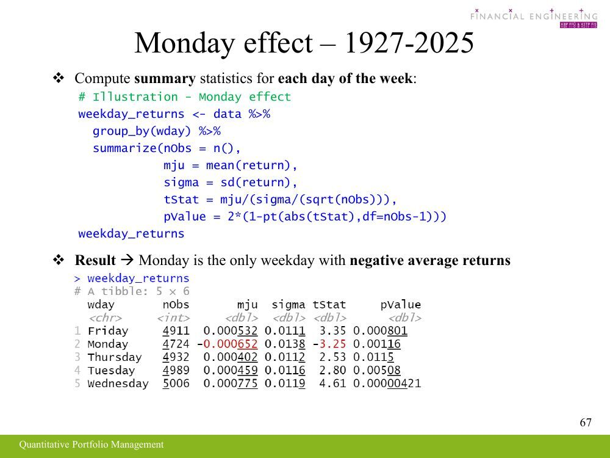
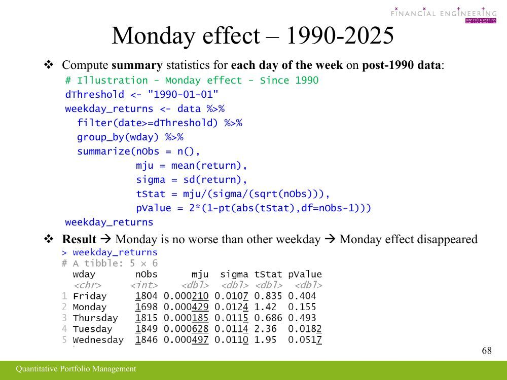
Monday reversal (s. 69, 70): vyberou se pondělky s propadem $\le -2\ \%$ a zkoumá se výnos úterý (target). Od 1927: 257 pozorování, průměr 0,56 %, t = 3,72. Od 1990: 68 pozorování, průměr 1,11 %, t = 3,51.
threshold <- -0.02; xwday <- "Monday"
temp <- dataS %>% filter(return <= threshold) %>% filter(wday == xwday)
data2 <- data %>% filter(date >= dThreshold) %>%
mutate(entry = (return <= threshold) & (wday == xwday), # vstup po pondělním propadu
profit = entry * target, # zisk v t+1, jinak 0
cumprofit = cumprod(1 + profit),
ddprofit = (cumprofit / cummax(cumprofit)) - 1)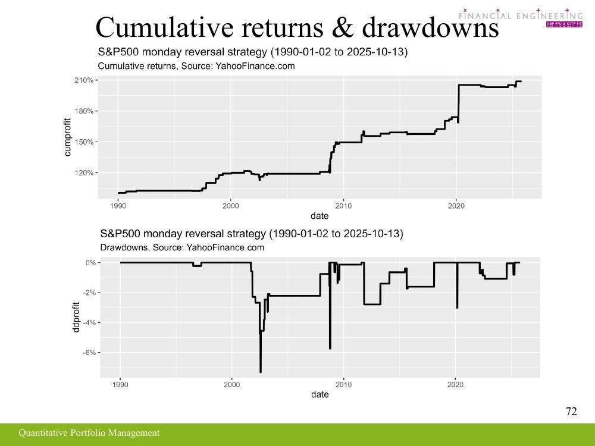
Závěr (s. 73): plus: dlouhodobě stabilní anomálie (zhruba 100 let), nejvyšší zisky v krizích; mínus: signál přichází jen zřídka (68krát od 1990), potenciálně vysoké tail risk (nákup po propadu).
target = lead(return)). Podmínka vstupu smí používat jen informaci dostupnou ke konci dne $t$; použít výnos dne $t+1$ k rozhodnutí by byla chyba „look-ahead“.symbols <- c("AAPL","MSFT","GOOG","AMZN")
prices <- tq_get(symbols, get = "stock.prices", from = "2011-01-01", to = today()) # long formát
prices <- prices %>% group_by(symbol) %>%
mutate(logprice = log(adjusted),
logreturn = logprice - lag(logprice),
logreturn = ifelse(is.na(logreturn), 0, logreturn),
cumlogret = cumsum(logreturn),
cumreturn = exp(cumlogret) - 1)tq_get pro víc symbolů je jeden tibble v long formátu se sloupcem symbol (s. 75). group_by(symbol) zajistí, že se výpočty dělají zvlášť pro každou akcii; facet_wrap(~ symbol) vykreslí 4 grafy (s. 76).adjusted - lag(adjusted): heteroskedastické, nevhodné pro ekonometrii (s. 77). Relativní výnosy (adjusted - lag(adjusted)) / lag(adjusted): použitelnější (s. 78). Logaritmické výnosy log(adjusted) - lag(log(adjusted)) jsou blízké relativním a dají se sčítat (s. 79).cumsum) je „linearizovaný“ výnos bez reinvestice předchozích zisků; exp(cumlogret) - 1 ho převede na skutečný kumulativní výnos (s. 80).mutate(year = year(date)) %>% group_by(symbol, year) %>% summarize(return = sum(logreturn)), graf geom_col(). Všechny čtyři akcie měly od 2011 ve většině let výnos kolem 20 %. Log výnosy se mírně liší od prostých, rozdíl je malý a lze je sčítat v čase.Roční log výnos se vrací na roční prostý stejně jako měsíční: $R_{\text{rok}} = e^{\sum r} - 1$.
summarize po group_by(symbol, year)): po summarize zůstane tibble seskupený podle symbol (poslední úroveň se odstraní). Proto skripty před dalším krokem dávají ungroup() a znovu group_by. Zapomenutý ungroup je častý zdroj nečekaných výsledků.tq_index_options() vypíše podporované indexy: "DOW" "DOWGLOBAL" "SP400" "SP500" "SP600". tq_index("DOW") vrátí aktuální složky DJIA: symbol, company, identifier, sedol, weight, sector, shares_held, local_currency (s. 82).tq_get(info$symbol, ...) nebo info %>% tq_get(...), druhý tvar k cenám připojí i informace o akcii (s. 83).tq_index("DOW") vrací dnešní složení indexu, ne složení v roce 2011. Akcie, které se do indexu dostaly díky dobrému vývoji (nebo vypadly kvůli špatnému), zkreslují výsledky (s. 89, 91, 99). Jde o zkreslení z budoucí informace (look-forward bias).Cíl (s. 92): každý rok investovat do portfolií složek DJIA seřazených podle výnosu, volatility, šikmosti a objemu předchozího roku (roční rebalancování), 2011 až 2021. Kroky:
tq_index) a cen (tq_get)volumeUSD = volume * closesummarize: volatilita sd(return), šikmost skewness(return), výnos sum(return), objem sum(volumeUSD)lag_return, lag_volume …) přes mutate s lag v rámci symbolNA: yprices[complete.cases(yprices), ] (rok 2011)gather(factor, value, lag_return:lag_volatility) (4 faktory do jednoho sloupce)rank(value), relative_rank = (rank-1)/(max(rank)-1)quintile = ceiling(relative_rank * 5)return přes akcie v kvintilu)mean(return), celkem sum(return), exp(sum) - 1geom_col, facet_wrap(~ factor))rank = 1…10, relative_rank = (rank-1)/9: 0; 0,111; …; 1. Nula se nahradí $10^{-6}$ (aby ceiling nedal 0). ceiling(rel*5): kvintily 1,1,2,2,3,3,4,4,5,5. Tedy kvintil 1 = nejnižší hodnoty faktoru, kvintil 5 = nejvyšší.round(relative_rank * 5) místo ceiling. Ověřeno: round dá 6 skupin (0 až 5) s polovičními krajními skupinami. Správně je ceiling. (3) Pozor na return = sum(return) v kroku 3 (viz výše).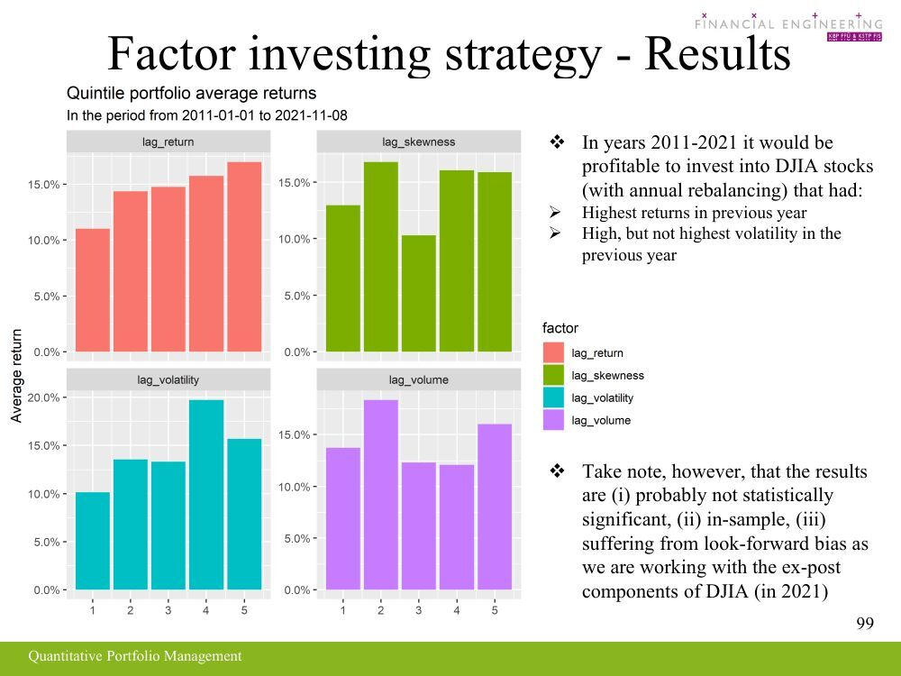
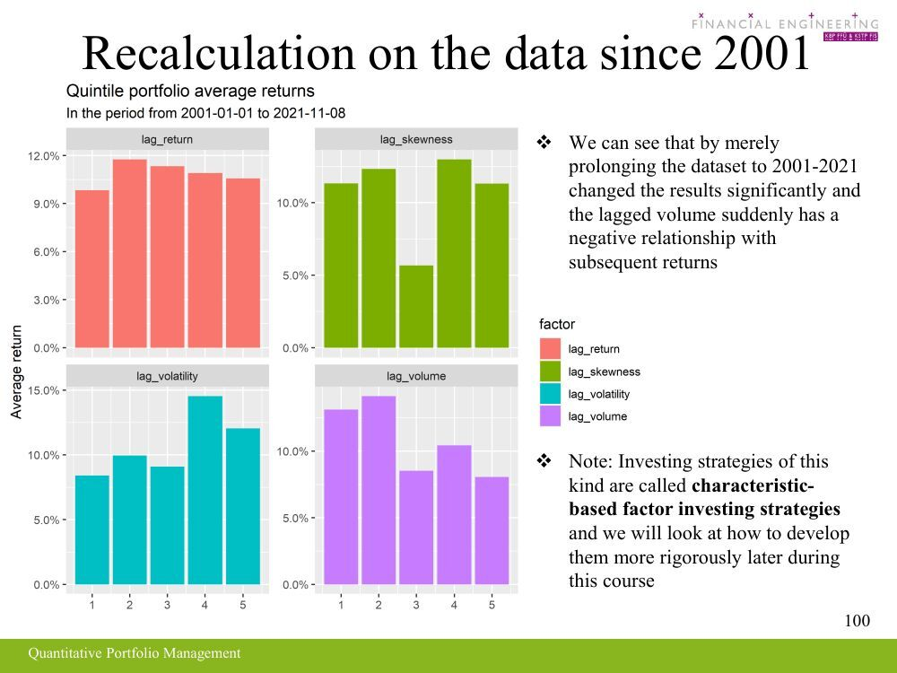
| Funkce | Balíček | Co dělá | Kde |
|---|---|---|---|
filter(X, podm) | dplyr | vybere řádky podle podmínky | s. 14 |
arrange(X, sl), desc() | dplyr | seřadí řádky (vzestupně / sestupně) | s. 15 |
select(X, sl) | dplyr | vybere nebo odstraní sloupce | s. 16 |
mutate(X, sl = výraz) | dplyr | vytvoří nebo změní sloupec | s. 17 |
transmute | dplyr | jako mutate, ale ponechá jen nové sloupce | s. 17 |
group_by(X, sl) | dplyr | provede další operace zvlášť v každé skupině | s. 18 |
summarize(X, y = vzorec) | dplyr | sloučí skupinu do jednoho řádku | s. 19 |
slice, count, n(), top_n | dplyr | řádky podle pozice, počet řádků ve skupině, největší | s. 12, 18; skript 1 |
lag(x, k), lead(x) | dplyr | hodnota o $k$ řádků zpět / o řádek dopředu | s. 52, 56 |
left_join(X, Y, by) | dplyr | připojí sloupce z Y podle klíče (např. cenu k dividendě) | s. 39, 43 |
mutate_at, summarize_at | dplyr | operace na více sloupcích najednou | s. 20 |
gather(NAME, VALUES, A:C) | tidyr | wide → long | s. 22 |
spread(NAME, VALUES) | tidyr | long → wide | s. 22 |
pivot_longer / pivot_wider | tidyr | doplněk: moderní ekvivalent gather / spread | tidyverse.org |
unite, separate | tidyr | spojí / rozdělí sloupce | s. 22 |
tq_get(sym, get, from, to) | tidyquant | stáhne ceny, dividendy, splity, FRED data | s. 25 |
tq_get_options() | tidyquant | vypíše dostupné zdroje dat | s. 25 |
tq_index(idx), tq_index_options() | tidyquant | složky indexu / podporované indexy | s. 82 |
tq_mutate, tq_transmute, tq_performance, tq_portfolio | tidyquant | časové řady a výkonnost; jen výčet na s. 24, ve skriptech se nepoužívají | s. 24 |
cumsum, cumprod, cummax | base R | kumulativní součet / součin / maximum | s. 52, 80 |
ggplot, geom_line, geom_col, geom_candlestick, facet_wrap | ggplot2 / tidyquant | grafy (svíčky jsou z tidyquant) | s. 29 až 33, 76, 81 |
doplněk: funs() (s. 20) je v dnešním dplyr zastaralé (varování funs() was deprecated, ověřeno v dplyr 1.2.1; stále funguje). Moderní zápis je summarize(across(c(mpg, disp), list(mean = mean, sd = sd))); across() nahrazuje i mutate_at a summarize_at. Slajd 24 uvádí balíček „tts“ pro technickou analýzu; v dokumentaci tidyquant jde pravděpodobně o balíček TTR (neověřeno, tidyquant není na tomto stroji nainstalován).
%>%, dplyr (filter řádky, select sloupce, arrange, mutate, group_by + summarize), tidyr (gather/spread, moderní pivot_longer/pivot_wider). Funkce pracují nejlépe s long formátem.tq_get(symbol, get = "stock.prices", from, to) vrací OHLCV + adjusted; OHLCV je upraveno o splity, adjusted navíc o dividendy. Dividendy a splity se stahují zvlášť ("dividends", "splits"), jejich date je ex-dividend datum / datum splitu.adjusted; close pro objem v USD. Dividendový výnos = dividenda / cena (× 4 pro čtvrtletní).group_by(symbol), ne po group_by(symbol, měsíc); NA prvního dne se nahrazuje nulou; cumreturn = cumprod(1+return) je hodnota investice, drawdown = cumreturn/cummax(cumreturn) - 1.tq_index("DOW") (dnešní složení, tedy look-forward bias). Faktorová strategie: průřezové pořadí → ceiling(rank * 5) → kvintilová portfolia; výsledky se mění s délkou vzorku (2011–2021 × 2001–2021).Přednášky 20. 10. a 10. 11. · Ing. Milan Fičura, Ph.D. · zdroj: Case Studies in Capital Markets and Banking, Section 3: Portfolio optimization and CAPM (1BP453_03_Portfolio_Optimization.pdf, čísla slajdů v závorkách), skripty Lecture_03_Script_01_Portfolio_Optimization_ETF.R a Lecture_03_Script_02_Portfolio_Optimization_ETF_Const.R (dále „skript 1“ a „skript 2“)
fmincon (sekce „Numerická optimalizace v R“, v kódu místo horní meze 1 dáte wmax = 0,5).Pro oceňování aktiv se trh bere jako v průměru averzní k riziku, a proto požaduje kladnou rizikovou prémii (s. 4).
„Férová“ cena je cena, při které jsou spekulanti a arbitrážéři v rovnováze, tedy nemají důvod tlačit cenu nahoru ani dolů (s. 5). Rovnovážný očekávaný výnos se skládá ze tří částí (s. 5):
U dluhopisů přibývá credit risk premium (kreditní prémie) odpovídající očekávané ztrátě při selhání. Je navíc k tržní riziková prémii (s. 5).
Aktiva s vyšší kolísavostí výnosů mají v průměru vyšší očekávaný výnos kvůli tržní riziková prémii: cash < státní dluhopisy < high-yield dluhopisy < akcie velkých firem < akcie malých firem < venture capital (s. 6).
| Prémie amerických akcií (s. 7) | vs. T-bills | vs. T-bonds |
|---|---|---|
| Ibbotson Associates, 1926–2000 | 6,3 % | – |
| Dimson, Marsh, Staunton, 1900–2001 | 5,6 % | 4,8 % |
| Dimson, Marsh, Staunton, 1900–2012 | 5,3 % | 4,3 % |
Pro globální akcie (vážené kapitalizací) je prémie 4,6 % / 4,3 % (1900–2001) a 4,1 % / 3,3 % (1900–2012) vůči bills / bonds (s. 7). Obecně uznané vysvětlení neexistuje, částečné jsou (s. 8): selection a survivorship bias (prémie se počítá jen z USA nebo z mála rozvinutých trhů), institucionální faktory (někteří investoři jsou motivováni držet dluhopisy) a kognitivní zkreslení (prospect theory: přehnaná averze ke ztrátám).
Investoři nežádají vyšší výnos za každou kolísavost, protože ji lze diverzifikací snížit. Příklad (s. 9): portfolio z $K$ nekorelovaných aktiv, každé s výnosem $N(\mu, \sigma)$ a stejnou váhou, má výnos $N(\mu, \sigma/\sqrt{K})$. Při $\sigma = 10\,\%$ je pro $K = 100$ volatilita portfolia 1 % a pro $K = 10\,000$ jen 0,1 %.
MPT předpokládá gaussovské výnosy, takže riziko stačí měřit směrodatnou odchylkou $\sigma$ (s. 10). Pro dvě aktiva A, B s váhami $w$ a $1-w$:
Pro $n$ aktiv s vektorem vah $\mathbf w$, vektorem očekávaných výnosů $\boldsymbol\mu$ a kovarianční maticí $\Sigma$ (s. 10):
Na slajdu 10 je odmocnina u $\sigma_w$ v textu pdf ztracená; správně je to směrodatná odchylka (odmocnina z rozptylu).
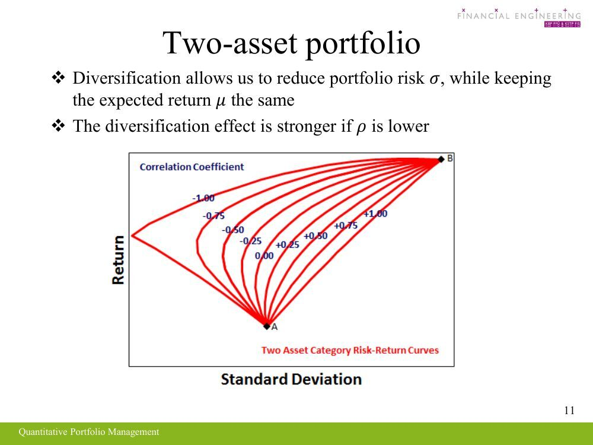
Efficient frontier (efektivní hranice) je množina portfolií s maximálním očekávaným výnosem $\mu_w$ pro danou úroveň rizika $\sigma_w$. S více aktivy je diverzifikační efekt silnější (s. 12). Najde se minimalizací $\mathbf w'\Sigma\mathbf w$ při $\mathbf w'\boldsymbol\mu = x$; řešení Lagrangeovými multiplikátory vede na soustavu lineárních rovnic (s. 12):
Markowitzův model předpokládá i.i.d. gaussovské výnosy $\mathbf r_t \sim N(\boldsymbol\mu, \Sigma)$. Efektivní hranici lze definovat třemi ekvivalentními způsoby (s. 21), vždy s rozpočtovým omezením (budget constraint) $\mathbf w'\mathbf 1 = 1$:
Bez dalších omezení mají analytické řešení. Pro variantu 3 (s. 21, 34; ve skriptu cyklus přes lambda_vec = 1*(1.1^(0:200))):
Zkouška: $\mathbf 1'\mathbf w = \frac{1}{2\lambda}\left(\mathbf 1'\Sigma^{-1}\boldsymbol\mu + v\,\mathbf 1'\Sigma^{-1}\mathbf 1\right) = 1$. Číslo $v$ je multiplikátor rozpočtového omezení (znaménko závisí na zvolené konvenci Lagrangiánu).
Když je k dispozici bezrizikové aktivum, drží všichni racionální investoři kombinaci bezrizikového aktiva a tržního (tangency) portfolia. To maximalizuje Sharpe ratio (s. 13):
Druhý vzorec je Capital Market Line (CML), na slajdu 13 označená jako Capital Allocation Line. Je to přímka s úsekem $R_f$ a sklonem rovným Sharpe ratiu tangency portfolia (s. 35).
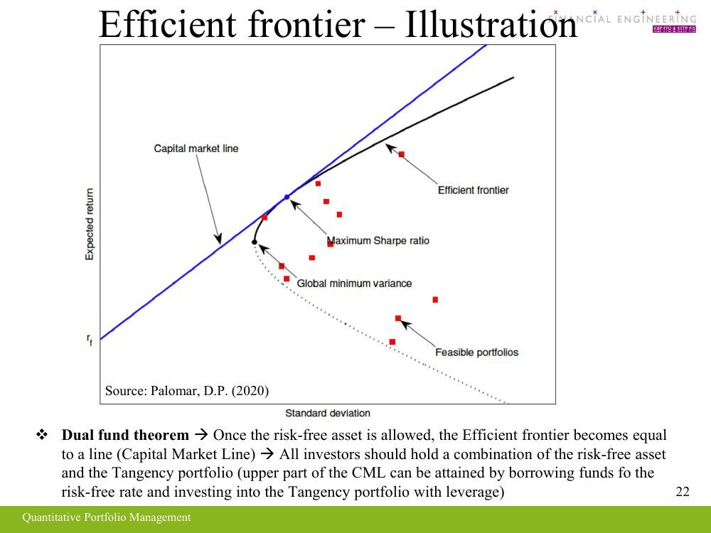
CAPM (Treynor 1961, Sharpe 1964, Lintner 1965, Mossin 1966) řeší oceňování aktiv v rámci MPT. Rovnovážný výnos aktiva závisí na jeho příspěvku k riziku tržního portfolia (s. 14). Historický výnos se rozkládá regresí (Security Characteristic Line, SCL, s. 15):
Celková variabilita výnosu se dělí na (s. 14):
Investoři dostávají prémii jen za systematické riziko. Očekávaný výnos kteréhokoli aktiva dává Security Market Line (SML) (s. 14, 16):
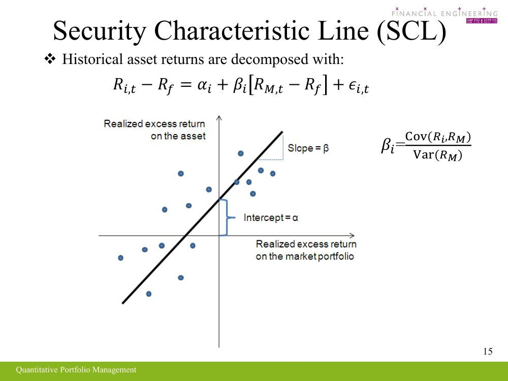
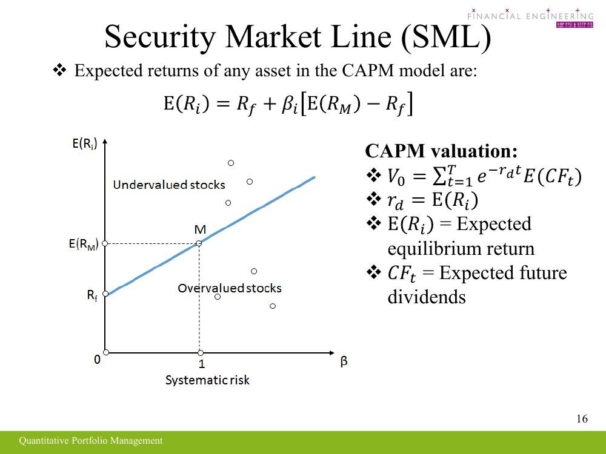
Odhad vstupů a nerealistické předpoklady (s. 17):
Odhad vstupů je podle přednášky nejproblematičtější část (s. 19). Markowitzův přístup používá pevné výběrové odhady $\boldsymbol\mu$ a $\Sigma$, což znamená:
Heuristická portfolia jsou jednoduché alternativy k optimalizaci, které ignorují informaci z $\Sigma$ (a obvykle i z $\boldsymbol\mu$). Používají se jako benchmark ve studiích (s. 20):
| Portfolio | Váhy | Optimální, když (s. 20) |
|---|---|---|
| Equal-weight (rovnoměrné) | $\mathbf w = \mathbf 1/N$ | žádná korelace ($\Omega = I$), stejné volatility i stejné očekávané výnosy; v praxi často těžko poražitelné |
| Value-weighted (kapitalizační) | $\mathbf w \propto \mathbf V$ (tržní kapitalizace) | kdyby všichni investoři byli racionální a homogenní, bylo by shodné s tangency portfoliem |
| Naive risk parity (inverse-volatility) | $\mathbf w \propto 1/\boldsymbol\sigma$ | $\Omega = I$, $\boldsymbol\mu = \mu\mathbf 1$, ale různé volatility; benchmark pro více tříd aktiv. Lze i $1/\boldsymbol\sigma^2$ |
| váhy podle $\boldsymbol\mu$ | $\propto 1/\boldsymbol\mu$, $\boldsymbol\mu/\boldsymbol\sigma$, $\boldsymbol\mu/\boldsymbol\sigma^2$ | pro aktiva, kde historické $\boldsymbol\mu$ dobře předpovídá budoucnost (indexové ETF) |
Na slajdu 20 je u value-weighted zapsáno $\mathbf w \propto 1/\mathbf V$; věcně (váhy podle kapitalizace) má být $\propto \mathbf V$. Ve skriptech se value-weighted nepočítá, počítá se w_ew a w_rp.
w_mv, w_ta):
Odvození minimum-variance (s. 23): Lagrangián $L(\mathbf w,\lambda) = \mathbf w'\Sigma\mathbf w + \lambda(\mathbf w'\mathbf 1 - 1)$. První podmínka $2\Sigma\mathbf w + \lambda\mathbf 1 = \mathbf 0$ dává $\mathbf w = -\tfrac12\lambda\Sigma^{-1}\mathbf 1$. Násobení $\mathbf 1'$ a podmínka $\mathbf 1'\mathbf w = 1$ dají $\lambda = -2/(\mathbf 1'\Sigma^{-1}\mathbf 1)$. Dosazení vrátí $w_{MV}$.
Tangency (s. 24): Lagrangián pro maximum Sharpe ratio vede na $w_T$ (nadpis slajdu 24 říká „Minimum variance – proof“, obsahem je ale tangency). Poznámka přednášejícího: bez rozpočtového omezení vychází $\mathbf w = \tfrac1\gamma\Sigma^{-1}(\boldsymbol\mu - r_f\mathbf 1)$. Pro $\gamma = \mathbf 1'\Sigma^{-1}(\boldsymbol\mu - r_f\mathbf 1)$ je to právě $w_T$, pro jiná $\gamma$ dostaneme jiné body na CML (tj. tangency s pákou nebo částečně v hotovosti).
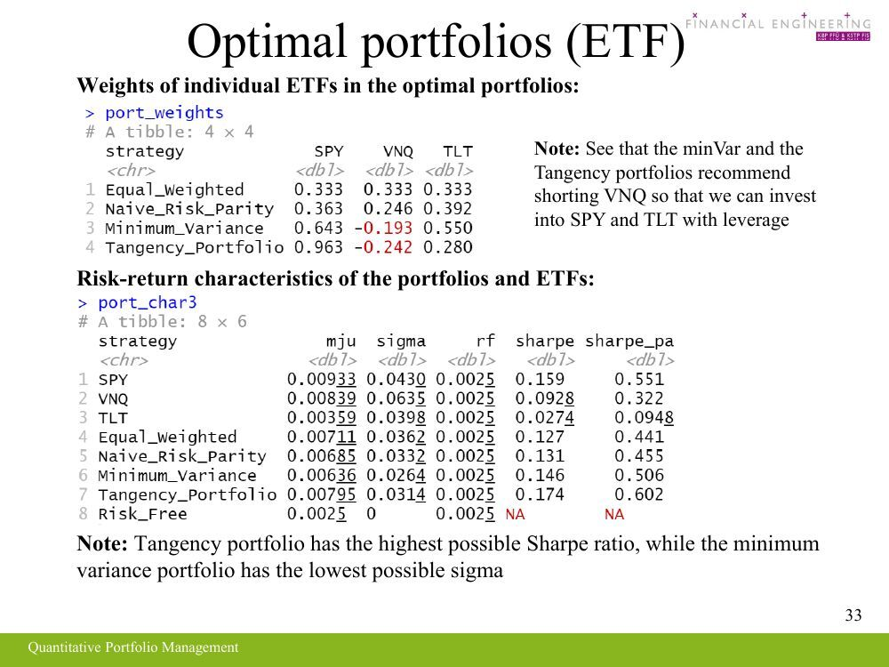
mju, sigma, Sharpe a sharpe_pa) ze skriptu 1. MV a tangency portfolio shortují VNQ, aby mohla investovat do SPY a TLT s pákou. Tangency: Sharpe 0,174 měsíčně, 0,602 p.a. Odnést si: Sharpe se z měsíčních dat anualizuje násobením $\sqrt{12}$.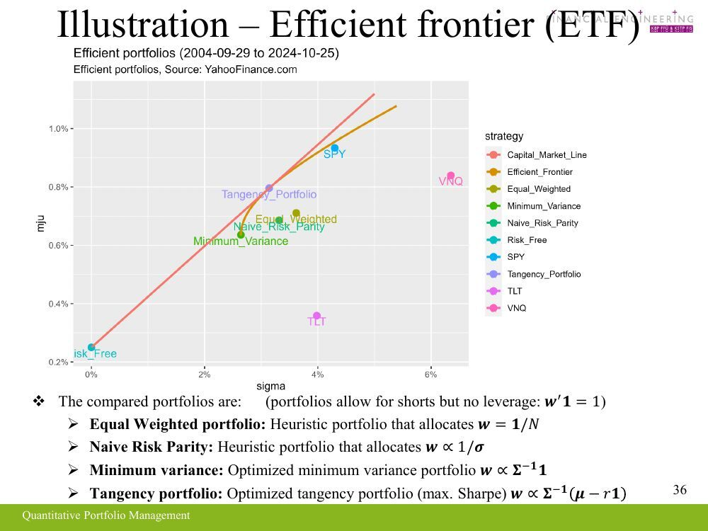
sharpe z měsíčních dat a anualizuje ho jako $\text{SR}_{p.a.} = \text{SR}_{p.m.}\cdot\sqrt{12}$ (sharpe_pa). Anualizace s $\sqrt{12}$ platí, protože excess výnos roste s časem lineárně ($\times 12$) a směrodatná odchylka s odmocninou ($\times\sqrt{12}$), při nezávislých měsících.Příklad (SPY, s. 33): $(0{,}0093 - 0{,}0025)/0{,}0430 = 0{,}158$ měsíčně, $0{,}158\cdot 3{,}464 = 0{,}548$ ročně (slajd: 0,159 a 0,551, zaokrouhlení vstupů).
Skript 1 i 2 počítají i Kelly portfolio:
Na slajdech ani ve skriptu není okomentováno a nepoužívá se dál (w_ke není v tabulkách ani v grafech). Doplněk: oproti $w_T$ nemá normalizaci na součet 1, takže je to tangency portfolio „bez rozpočtového omezení“ z poznámky na slajdu 24 ($\gamma \approx 1$). Součet vah nabývá libovolné hodnoty: zbytek je v bezrizikovém aktivu (součet < 1) nebo vypůjčený (součet > 1). Doplněk: pro 3 ETF z příkladu by vyšlo $w_{Ke} \approx (5{,}29;\ -1{,}32;\ 1{,}55)$, součet 5,5, tedy páka více než 5:1. Doplněk: proto se v praxi často používá jen zlomek (fractional Kelly), zdroj neověřen. Toto číslo je vlastní výpočet z zaokrouhlených vstupů slajdu 30 (ve slajdech není).
Postup case study 1 (s. 26–38, skript 1): stažení cen (tq_get), společný začátek časových řad (max z prvních dat ETF), denní log-výnosy (log(adjusted) a rozdíl), agregace na měsíc součtem log-výnosů, převod na prosté výnosy exp(return)-1, matice ret, mju <- colMeans(ret), covmat <- cov(ret), sigma <- diag(covmat)^(1/2), váhy, výnosy portfolií ret %*% w, kumulované výnosy cumprod(1+returnS).
Výsledky in-sample (odhad i test na stejných datech): tangency portfolio má nejvyšší kumulovaný výnos. Rozdíly jsou u 3 ETF malé (málo diverzifikace). Výsledek je zároveň příliš optimistický, protože backtest je in-sample (s. 38). Při rozšíření na 7 ETF (SPY, EFA, EEM, VNQ, TLT, IAU, HYG) tangency portfolio ostatní jasně převyšuje, následuje minimum variance (s. 43, graf v logaritmické škále, aby byly vidět i nižší křivky). Přednášející opakuje: budoucí výkonnost pravděpodobně nebude tak dobrá (!).
Out-of-sample test (s. 44–47, 59): odhad $\boldsymbol\mu$, $\Sigma$ a vah končí v roce 2019 (sYear <- 2019, data filter(year(date)<=sYear)), a výkonnost se měří v letech 2020–2024. Ve skriptech je tento blok uzavřen v if (FALSE), k použití ho je třeba zapnout (TRUE) a spustit před výpočtem vah. Váhy se pak aplikují na celou matici ret a out-of-sample úsek se vybere filtrem podle data. Realizované Sharpe: mean(returnS), sd(returnS), (mju-rf)/sigma, *sqrt(12).
cumprod(1+returnS)) a jejich interpretace.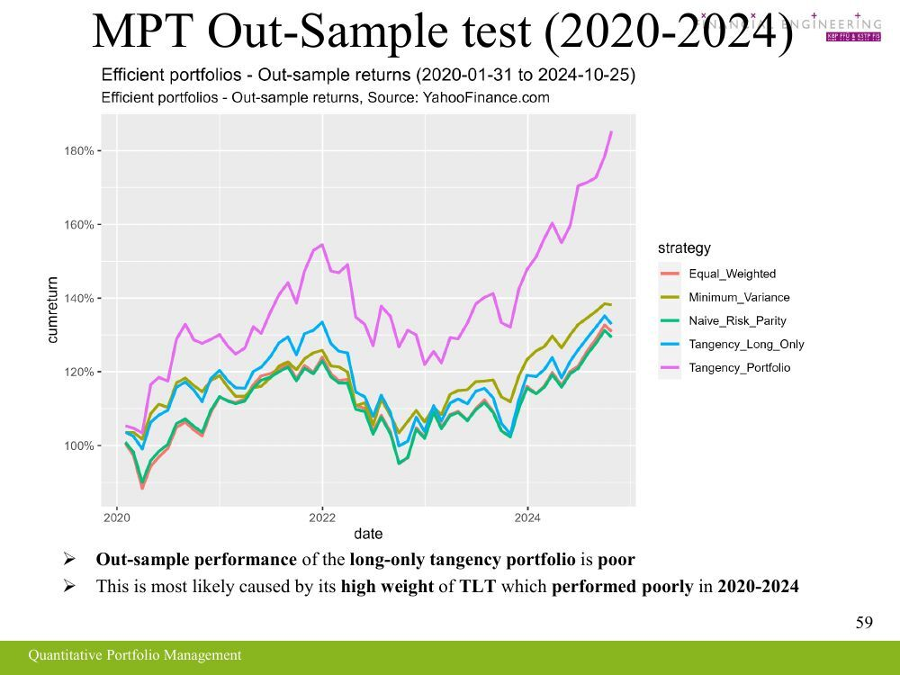
Neomezené tangency portfolio se rozpočtovým omezením $\mathbf w'\mathbf 1 = 1$ nijak neomezuje páku. Ve skriptu 1 pro 7 ETF vychází (s. 48; dále s. 41):
| Váhy tangency, 7 ETF (s. 48) | SPY | EFA | EEM | VNQ | TLT | IAU | HYG |
|---|---|---|---|---|---|---|---|
| 2007–2019 | 1,32 | −0,892 | 0,002 | −0,159 | 0,341 | 0,127 | 0,263 |
| 2007–2024 | 1,96 | −1,26 | −0,127 | −0,191 | 0,104 | 0,390 | 0,127 |
Portfolio shortuje „slabé“ ETF (EFA, VNQ) a financuje tím vysokou páku do SPY. Součet kladných vah je v obou případech přes 2 (na slajdu je to „leverage exceeds 2:1“). Hrubá páka $\sum|w_i|$ pro 2007–2024 vychází 4,16 (vlastní součet z tabulky). Slajd 69 uvádí u DJIA akcií sum(abs(w_ta))=5.06. Přednášející: 2:1 ještě může být přijatelná, ale neomezená optimalizace často dává mnohem vyšší páku → potřeba omezené optimalizace (s. 48).
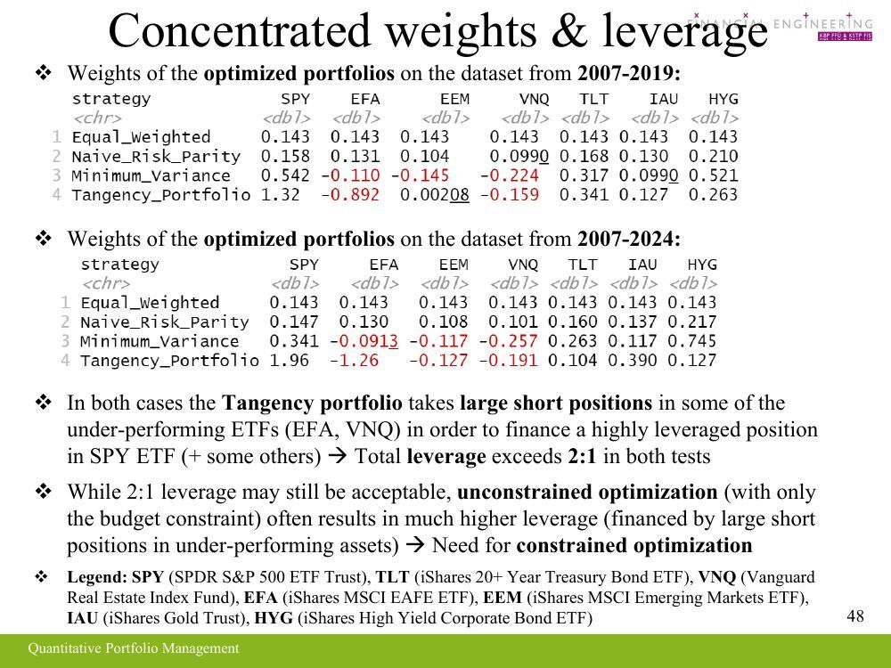
Vedle rozpočtového omezení ($\mathbf w'\mathbf 1 = 1$, bez páky) se v praxi používají další (s. 49):
| Omezení | Zápis | Význam |
|---|---|---|
| Long-only | $\mathbf w \ge 0$ | bez shortů |
| Holding | $\mathbf l \le \mathbf w \le \mathbf u$ | minimální a maximální váhy (např. max 50 %) |
| Leverage | $\|\mathbf w\|_1 \le L$ | limit celkové páky |
| Cardinality | $\|\mathbf w\|_0 \le N$ | nejvýše $N$ držených aktiv |
| Turnover | $\|\mathbf w - \mathbf w_0\| \le u$ | omezení obratu vůči současnému portfoliu $\mathbf w_0$ |
| Dollar-neutral | $\mathbf w'\mathbf 1 = 0$ | short = long |
| Beta-neutral | $\mathbf w'\boldsymbol\beta = 0$ | nulová citlivost na trh |
| Market-neutral | $B'\mathbf w = \mathbf 0$ | nulová citlivost na faktory ($\mathbf r_t = \boldsymbol\alpha + B\mathbf f_t + \boldsymbol\varepsilon_t$) |
Pro většinu omezení (včetně long-only) neexistuje analytické řešení, a proto se používá numerická optimalizace: kvadratické programování (balík quadprog), zlomkové programování (bisekce), obecné algoritmy s omezeními (fmincon) nebo heuristické globální algoritmy (simulated annealing, genetické algoritmy) (s. 49).
Základní R nabízí optim(x0, objective, method = …) (s. 50): BFGS a CG (lokální, s derivacemi, bez omezení), L-BFGS-B (s mezemi), Nelder-Mead (bez derivací), SANN (simulated annealing, globální) a Brent (jedna proměnná). Pro omezení se používá fmincon z balíku pracma, který je robustnější než optim (s. 52):
A, b: lineární nerovnosti $A\mathbf x \le \mathbf b$,Aeq, beq: lineární rovnosti $A_{eq}\mathbf x = \mathbf b_{eq}$,lb, ub: meze (box constraints) $lb \le \mathbf x \le ub$,hin, heq: nelineární nerovnosti a rovnosti.Pro řešiče bez omezení lze použít „slabá“ omezení přičtením penalizace k cílové funkci, nebo transformaci proměnných: $x > 0$ přes $z = \log x$, $x = e^z$; interval (0, 1) přes $x = 1/(1+e^{-z})$ (s. 51). (Slajd píše „0 > x > 1“, myslí se samozřejmě $0 < x < 1$.)
Úloha: maximalizovat Sharpe ratio při $\mathbf w'\mathbf 1 = 1$ a $\mathbf w \ge 0$ (s. 53–54). Řešení ve skriptu 2:
library(pracma)
mysharpe = function(w, mju, covmat, rf) {
mw <- as.vector(t(w) %*% mju) # očekávaný výnos portfolia
sw <- as.vector((t(w) %*% covmat %*% w)^(1/2)) # volatilita portfolia
(mw - rf) / sw # Sharpe (měsíční)
}
objective = function(w) -mysharpe(w, mju, covmat, rf) # minimalizujeme -Sharpe
wmin <- numeric(length(mju)) # dolní meze = 0 (long-only)
wmax <- numeric(length(mju)) + 1 # horní meze = 1
Aeq = t(rep(1, length(mju))); beq = 1 # součet vah = 1
opt <- fmincon(w_ew, objective, Aeq = Aeq, beq = beq, lb = wmin, ub = wmax)
w_tc <- opt$parmysharpe počítá Sharpe z vah, mju, covmat, rf. mju, covmat a rf bere objective z globálního prostředí.w_ew (splňuje omezení).fmincon(w_ew, objective, Aeq = Aeq, beq = beq) musí dát stejné váhy jako analytická w_ta (kontrola, w_ta_check).Tangency_Long_Only a do c_port i ret_tc.wmax <- numeric(length(mju)) + 0.5. Dolní mez 0 (zadání má ostře $w>0$, numericky to nerozliší). Při 8 ETF je startovní equal-weight (0,125) přípustný. Při 3 aktivech by omezení 0,5 nutilo rozložit váhy (příklad níže).Výsledek pro 7 ETF (s. 55, 58): long-only tangency (2007–2024) drží SPY 0,588, IAU 0,334, TLT 0,0772 a ostatní 0. Její Sharpe je 0,175 měsíčně (0,608 p.a.) vůči 0,308 (1,07 p.a.) u neomezené tangency, ale vyšší než u equal-weight (0,0884) a minimum variance (0,153). Na datech do 2019 byla váha TLT 0,426 (SPY 0,487, IAU 0,0868). Po přidání dat do 2024 váha TLT klesla a váha IAU vzrostla: „nemohli jsme předem (v roce 2019) vědět, že TLT bude v letech 2020–2024 zaostávat a IAU předstihne“ (s. 58). Out-of-sample výkonnost long-only tangency je podle slajdu 59 slabá, pravděpodobně pro vysokou váhu TLT. (Na grafu je kolem 133 % a leží jen těsně nad equal-weight i naive risk parity a pod minimum variance. „Slabá“ je tedy relativně k neomezené tangency.)
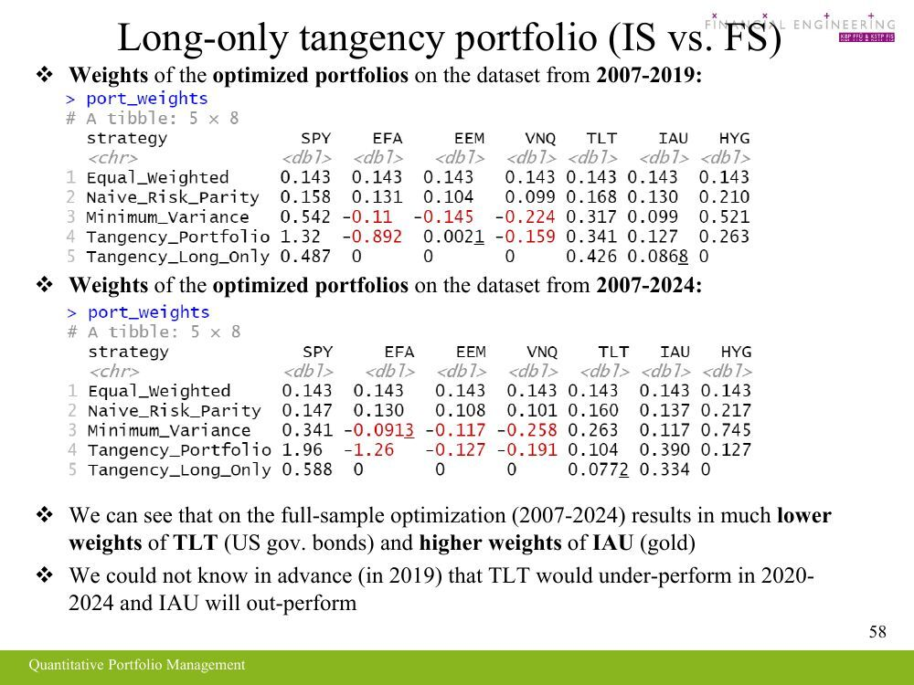
Varianta A (s. 61–69): optimální long-only portfolio z akcií DJIA odhadnuté na 2011–2018 a testované v 2019–2024, vůči equal-weight. Výsledek (s. 69): in-sample long-only tangency výrazně překonává equal-weight, out-of-sample ji překonává jen mírně. Neomezené tangency překonává oba, ale za cenu mnohem vyšší páky a rizika (sum(abs(w_ta)) = 5,06).
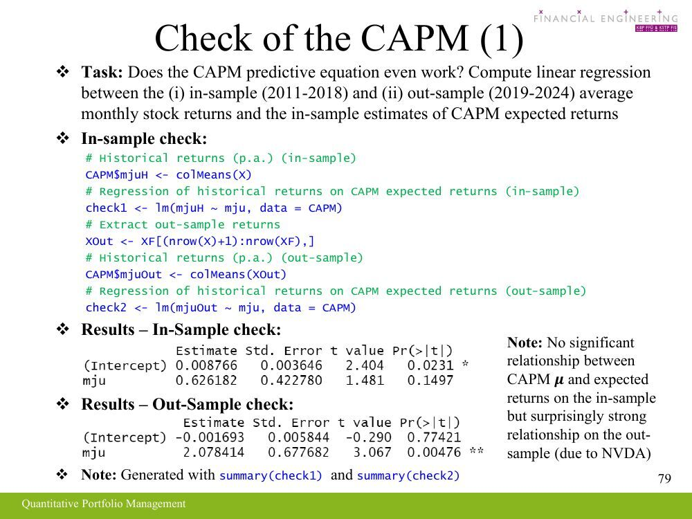
Varianta B (s. 71–78): $\boldsymbol\mu$ a $\Sigma$ z CAPM místo historie (rf = 1 % p.a., $E[R_M]$ = 10 % p.a., SPY jako proxy trhu):
lm v broom): $R_{i,t} - R_f = \alpha_i + \beta_i(R_{M,t} - R_f) + \epsilon_{i,t}$ na 2011–2018 (s. 72),mju = rf + (mjuM - rf)*beta (s. 75),Všechny korelace mezi akciemi tak vysvětlují jen bety (rezidua jsou nekorelovaná): forma regularizace $\Sigma$ (s. 77). Korelace reziduí DJIA akcií jsou nízké a často záporné, korelace samotných výnosů vyšší a většinou kladné (s. 76). Výsledek (s. 78): optimalizace se CAPM vstupy nezlepšila výsledek ani in-sample oproti equal-weight (CAPM předpokládá jednoduchou korelační strukturu a výnosy závislé jen na $\beta$, takže je málo prostoru pro optimalizaci). Přednášející navrhuje CAPM použít k regularizaci historických odhadů: $\boldsymbol\mu = (1 - c_\mu)\boldsymbol\mu_{hist} + c_\mu\boldsymbol\mu_{CAPM}$ a $\Sigma = (1 - c_\Sigma)\Sigma_{hist} + c_\Sigma\Sigma_{CAPM}$. Bety jsou nejvyšší u financí, průmyslu a IT, nejnižší u spotřebního zboží, komunikací a zdravotnictví (s. 74).
Podle empirických testů CAPM nefunguje dobře (s. 82–83, Blitz, van Vliet, Baltussen 2019, The Volatility Effect Revisited): vztah mezi betou a výnosem je v datech 1963–2018 plochý až klesající, tedy volatility puzzle (akcie s nízkou volatilitou mají vyšší risk-adjusted výnos). Částečně to vysvětlují jiné faktory (tržní prémie není jediná). CAPM funguje u podskupin s betou do 1,1 a s dalšími faktory je vztah lineárnější, ale pro nízké i vysoké bety stále příliš plochý (s. 83). Je-li sklon menší než 1, lze použít strategii Betting-Against-Beta: short akcií s vysokou betou, hedge nákupem akcií s nízkou betou na páku tak, aby beta portfolia byla nulová (s. 81).
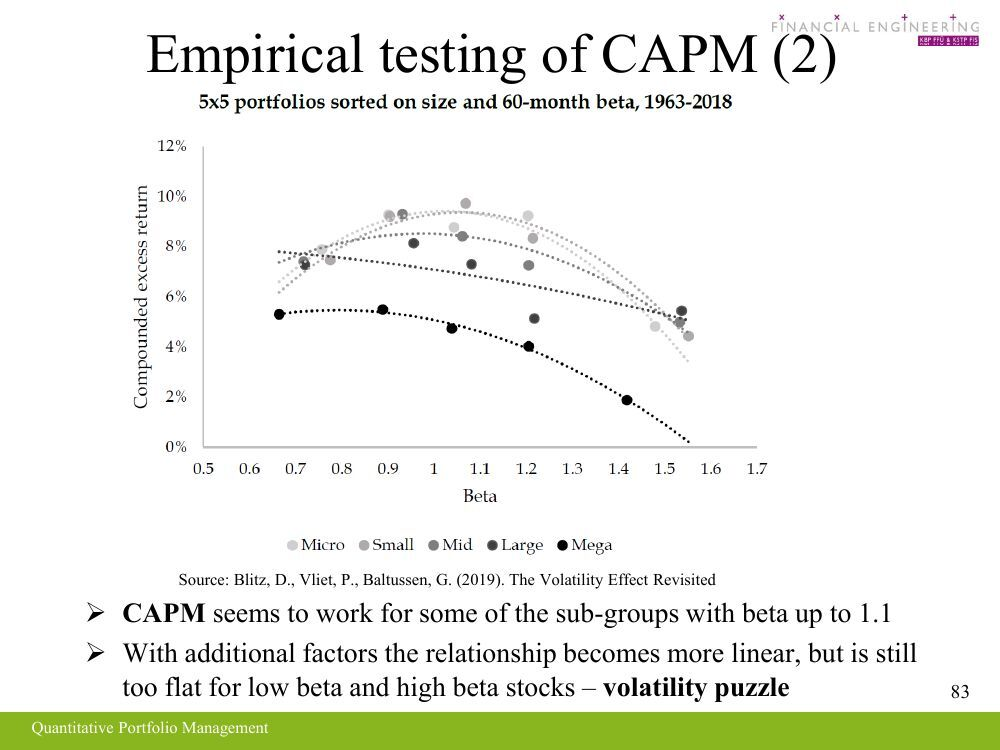
ginv vs. solve: skripty používají ginv z balíku MASS (Moore–Penroseova pseudoinverze) místo solve (s. 31). Pro regulární $\Sigma$ dávají stejný výsledek. Je-li $\Sigma$ singulární (např. víc aktiv než pozorování, kolineární aktiva), solve skončí chybou, ginv vrátí řešení s minimální normou. Výstup je matice $n\times 1$, před další prací je potřeba as.vector().mju a covmat jsou měsíční. rf musí být měsíční (0.03/12), jinak se odečítá 3 % od měsíčního výnosu. Sharpe se anualizuje $\sqrt{12}$, nikoli 12. Váhy jsou na jednotkách nezávislé, Sharpe a $\mu$ ne.exp(return)-1 (agregace do portfolia). Smíchání obou je chyba.fmincon musí startovat v přípustném bodě (equal-weight). Omezení se zadávají jako lb a ub (ne jako část cílové funkce) a součet vah jako Aeq, beq. Cílem je záporný Sharpe.if (FALSE)) musí být zapnutý před výpočtem vah, jinak se váhy odhadují z celého vzorku (in-sample = out-sample). objective bere mju a covmat z globálního prostředí.mju pro $\mu$ a „Capital Allocation Line“ na s. 13 označuje to, co se jinde nazývá Capital Market Line (CML).fmincon s -Sharpe, Aeq/beq (součet 1), lb/ub. Omezení snižuje in-sample Sharpe, ale zlepšuje stabilitu.fmincon s $0 < w < 0{,}5$, $r_f$ = 3 %/12, in-sample 2007/05–2023/12, out-of-sample 2024/01–2026/10.Přednáška 27. 10. · Ing. Milan Fičura, Ph.D. · zdroj: Case Studies in Capital Markets and Banking – Multi-factor models (1BP453_04_Factor_Models.pdf, čísla slajdů v závorkách; slidy jsou z kurzu 1BP453 Quantitative Portfolio Management), skripty k této přednášce zatím nejsou v podkladech, R kód je tedy brán jen ze slajdů; doplněk: definice SMB a HML podle Ken French Data Library a Fama–French (1993), Fama–MacBeth (1973), Shanken (1992)
Empirie ale CAPM nepotvrzuje. Na slajdech jsou portfolia řazená podle 60měsíční bety v USA, 1963–2018 (Blitz, van Vliet, Baltussen 2019, The Volatility Effect Revisited):
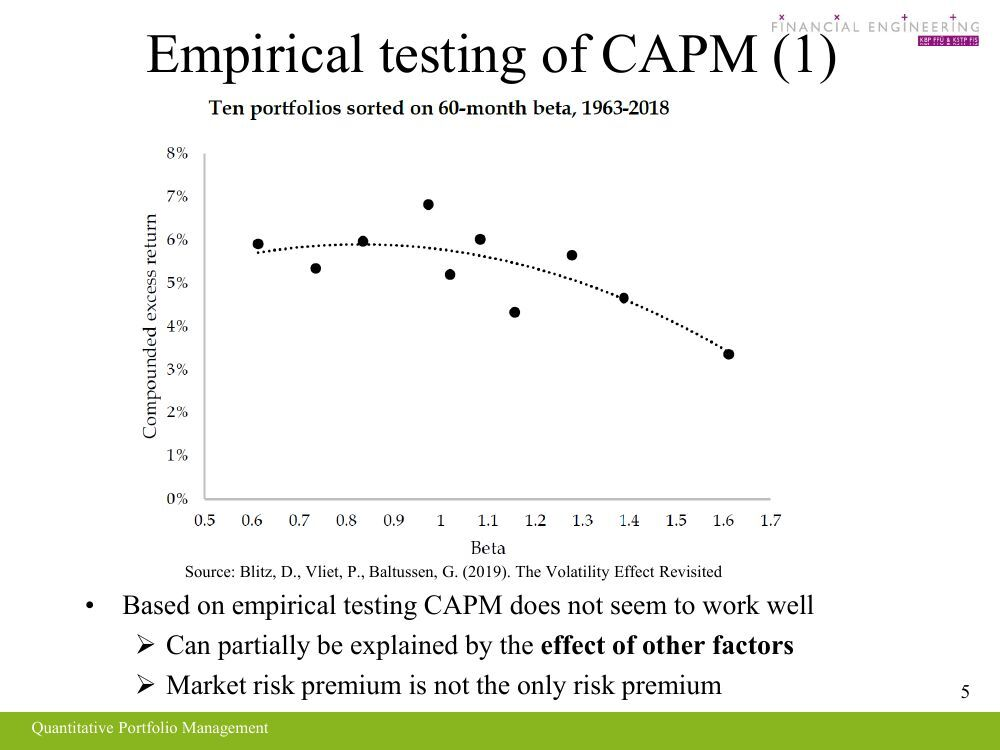
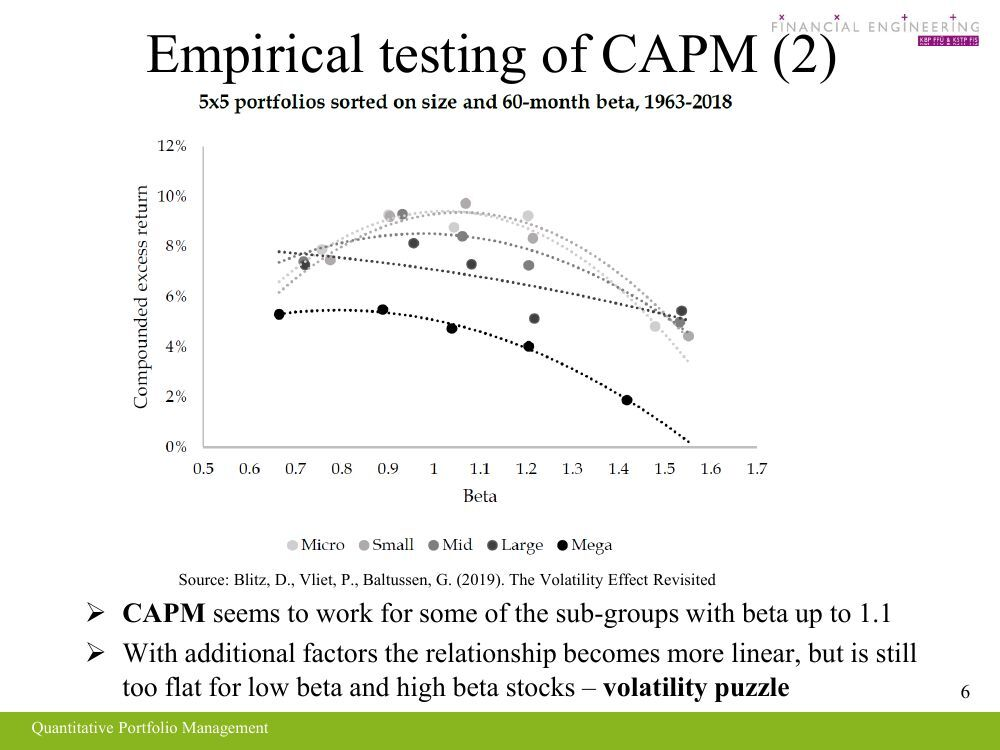
APT sloužila jako rámec pro další modely (s. 7). Slajdy uvádějí čtyři:
| Model | Faktory | Poznámka ze slajdů |
|---|---|---|
| Chen–Roll–Ross (1986) (s. 8) | makro: průmyslová produkce (změny očekávaných cash flow), rozdíl výnosů rizikových a bezpečných podnikových dluhopisů (rizikové preference), rozdíl dlouhých a krátkých sazeb (časové preference), neočekávaná a očekávaná inflace | prémie se odvozují dvoukrokovou metodou Fama–MacBeth |
| Fama–French 3 (1993) (s. 9) | trh, SMB (malé − velké firmy), HML (vysoké − nízké B/P, tedy book-to-market) | $E[R_{i,t}]=R_{f,t}+\beta_i E[R_{m,t}-R_{f,t}]+\beta_{S,i}SMB_t+\beta_{V,i}HML_t$ |
| Carhart 4 (1997) (s. 10) | FF3 + UMD (momentum: výherci − poražení za předchozích 12 měsíců) | přidává $\beta_{M,i}UMD_t$ |
| Fama–French 5 (s. 15) | FF3 + RMW (profitabilita) + CMA (investiční politika) | na slajdech jen jako dataset knihovny |
Problém interpretace (s. 9, 10): u HML je otázka, zda jde o rizikový faktor, nebo o porušení polosilné formy tržní efektivity (v textu slajdu „medium form“). U UMD je to ještě problematičtější: jde o rizikový faktor, nebo porušení slabé formy efektivity? Prémie za faktor tedy nemusí být odměna za riziko.
Slajd 11 ukazuje složený přebytkový výnos (compounded excess return) faktorů v jednotlivých dekádách 1929–2018. Jednotku (zda ročně, nebo za dekádu) slajd neuvádí. Faktory (s. 11):
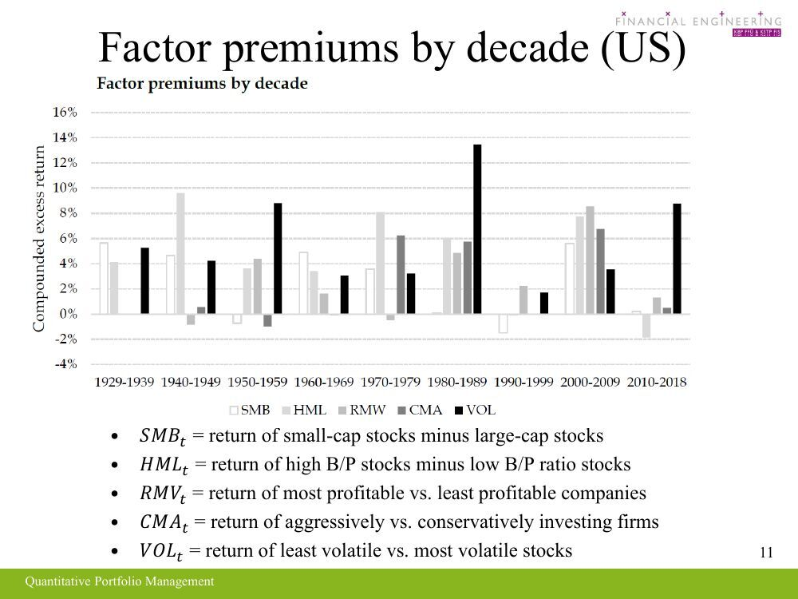
Z grafu plyne hlavně to, že žádná prémie není stálá. Žádný faktor nevydělává ve všech dekádách, takže jejich výnos nelze brát jako jistotu.
Slajd 12 ukazuje kumulativní výnosy nejběžnějších faktorů 1963–2020 s měsíčním rebalancingem na logaritmické ose: Mkt-RF (trh − bezriziková sazba), SMB, HML, RMW, CMA, Mom (vysoký − nízký výnos za posledních 12 až 2 měsíců), ST_Rev (nízký − vysoký výnos za poslední měsíc) a LT_Rev (nízký − vysoký výnos za 60 až 13 měsíců). Nejvyšší kumulativní výnos má Mom, druhý je ST_Rev; SMB a LT_Rev končí nejníž.
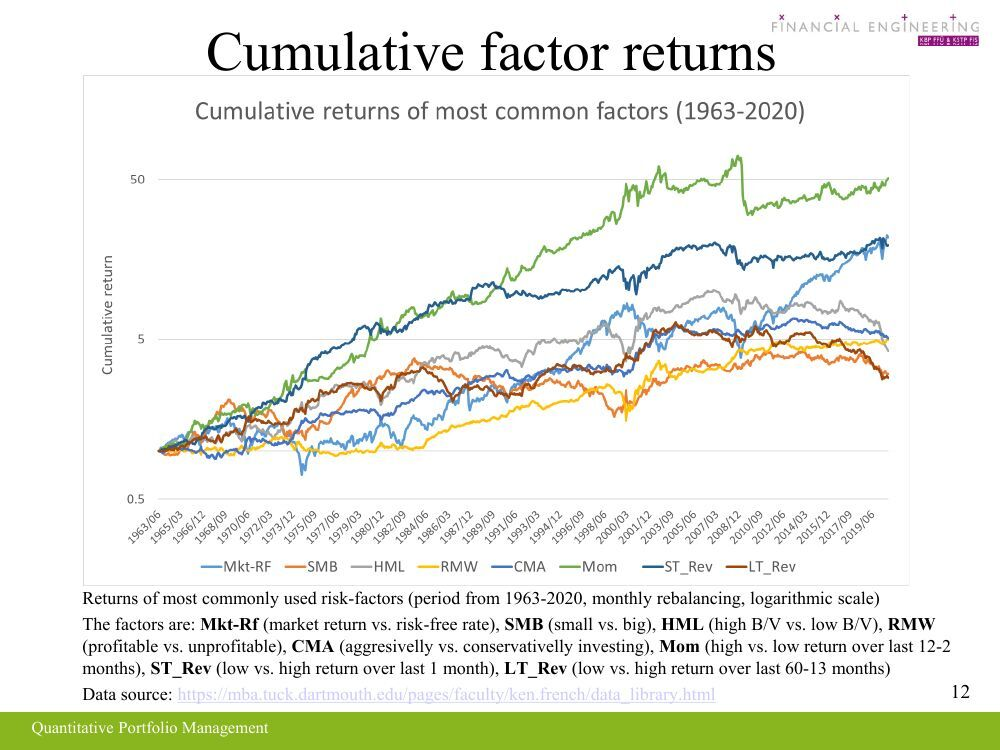
Složený a logaritmický výnos (s. 20, 21): kumulativní složený výnos roste exponenciálně, logaritmický výnos se sčítá a trend je lineární. Zpět se převádí $\exp(\text{kum. log výnos})-1$. Na slajdu 21 (daily, od 1963) končí Mkt-RF kolem 2 900 % složeného výnosu, HML dosáhl vrcholu kolem 1 000 % a poté klesl na zhruba 450 %. HML, CMA a SMB mají za poslední dekádu záporný výnos (s. 21).
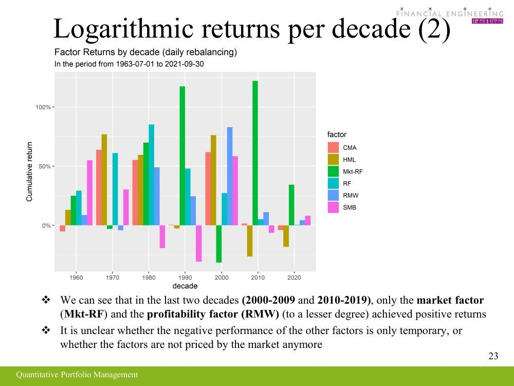
Fama–French data library (s. 14–16) je knihovna výnosů portfolií (kvantilová, faktorová, sektorová), aktuálně 297 datasetů (s. 15). Z R se čte balíčkem frenchdata funkcemi get_french_data_list() a download_french_data("název") (s. 14, 16). Výnosy jsou složené, v procentních bodech (s. 16).
| Dataset | Rebalancing |
|---|---|
| Fama/French 3 Factors | měsíční |
| Fama/French 3 Factors [Weekly] | týdenní |
| Fama/French 3 Factors [Daily] | denní |
| Fama/French 5 Factors (2x3) (+ [Daily]) | měsíční (+ denní) |
Další faktory ze slajdu 24: Mom (nejvíc − nejméně rostoucí akcie za posledních 12 měsíců bez posledního), ST-Rev (nejméně − nejvíce rostoucí za poslední měsíc), LT-Rev (nejméně − nejvíce rostoucí za posledních 5 let bez posledního roku). Kód faktory z knihovny sloučí pomocí left_join podle data.
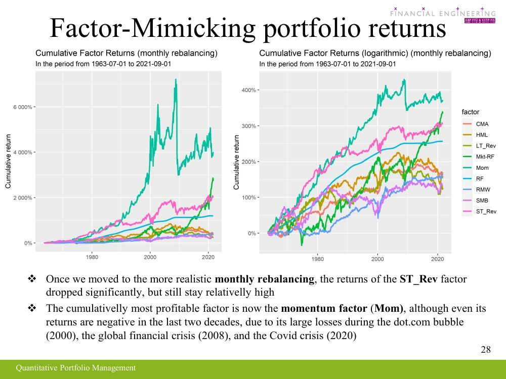
Odhadnutý faktorový model se dá použít k optimalizaci portfolia v rámci MPT (s. 31). Zjednodušuje odhad obou vstupů, vektoru očekávaných výnosů $\boldsymbol\mu$ i kovarianční matice $\boldsymbol\Sigma$:
Případová úloha ze slajdů (s. 32–45): faktory Mkt-RF, HML, SMB, RMW, CMA, Mom, ST-Rev, LT-Rev (denní, od 1. 1. 1990) a akcie DJIA, in-sample 1990–2015, out-of-sample 2016–2021. Postup: (1) stáhnout faktory, (2) stáhnout ceny DJIA, (3) pro každou akcii regrese $R_t-RF$ na faktory, (4) $\boldsymbol\mu=r_f+\boldsymbol B\bar{\boldsymbol F}_{0:t}$ (v kódu $r_f=1\,\%$ ročně, dělí se 252), (5) $\boldsymbol\Sigma=\boldsymbol B\boldsymbol\Omega\boldsymbol B'+\boldsymbol D$, (6) funkce Sharpeho poměru, (7) optimalizace pro strategii 200/100 (long 200 %, short 100 %, tj. $\sum w=1$ a $\sum w_i^+=2$, optimalizace L-BFGS-B s penalizací), (8) výnosy out-of-sample proti rovnoměrnému benchmarku.
Příklad z kroku 3 (s. 38): AAPL má beta k trhu ≈ 1,0 a nejvíce zápornou beta k CMA (≈ −1,27). To dává smysl: Apple agresivně investuje, takže trh, který zvýhodňuje konzervativní firmy, mu škodí.
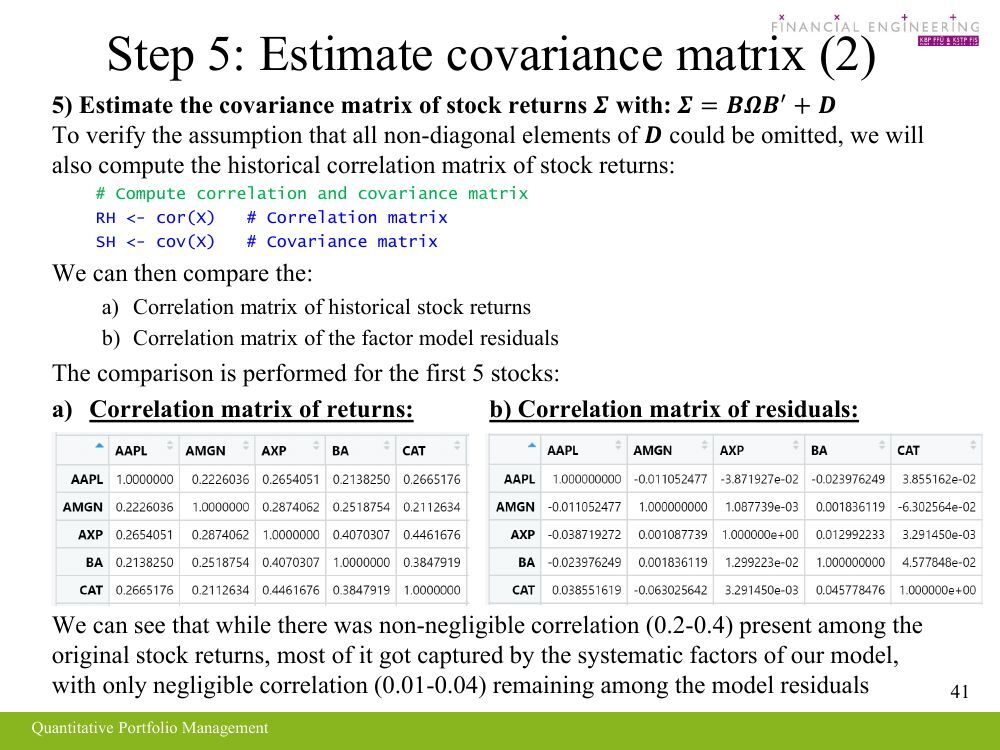
Výsledek (s. 46, 47): optimalizované portfolio je horší než rovnoměrný benchmark in-sample i out-of-sample, takže citlivosti na faktory nebyly u akcií DJIA v letech 1990–2021 spojeny s nadprůměrným výnosem.
Modifikace kroku 4 (s. 50–52): do očekávaného výnosu se ponechají historické alfy, $\boldsymbol\mu=\boldsymbol A+\boldsymbol B\bar{\boldsymbol F}_{0:t}$. To je v rozporu s hypotézou efektivních trhů, protože předpokládá, že akcie, které dřív překonávaly trh, ho budou překonávat i dál. Výsledek je lepší: in-sample čekaně (alfy byly v optimalizaci použity), out-of-sample kvůli (1) náhodě, (2) survivorship bias (zkreslení přežitím) datasetu, nebo (3) ultra-dlouhodobému momentu u akcií DJIA (s. 51).
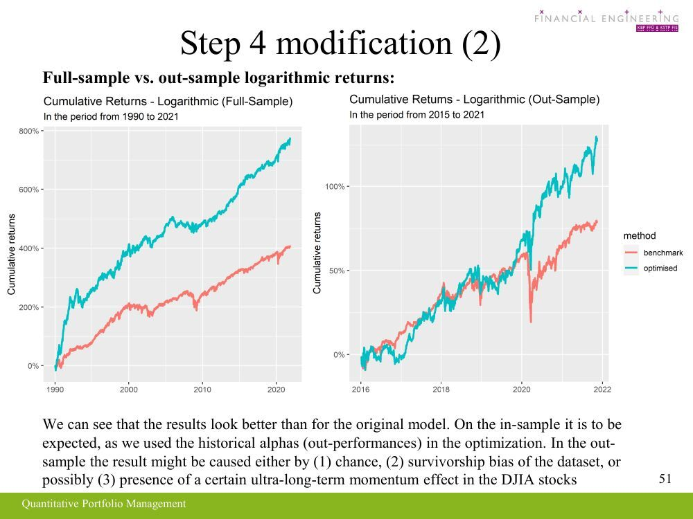
Fama–MacBeth (1973) je dvoukroková metoda odhadu faktorových prémií (s. 8):
doplněk (Fama, MacBeth 1973, Risk, Return, and Equilibrium: Empirical Tests, Journal of Political Economy 81(3); vlastní shrnutí postupu, článek jsem neotevřel): výhoda průměrování je v tom, že se standardní chyba počítá z variability lambd v čase, takže zohledňuje průřezovou korelaci reziduí v rámci období.
Fičura FM regresi používá, aby zjistil, proč model nefunguje: zda jsou citlivosti na faktory významně spojeny s historickými výnosy akcií. V kódu se však dělá jedna průřezová regrese průměrných výnosů akcií na bety (lm(MH ~ phi[,-1])), ne regrese v každém období s následným průměrem.
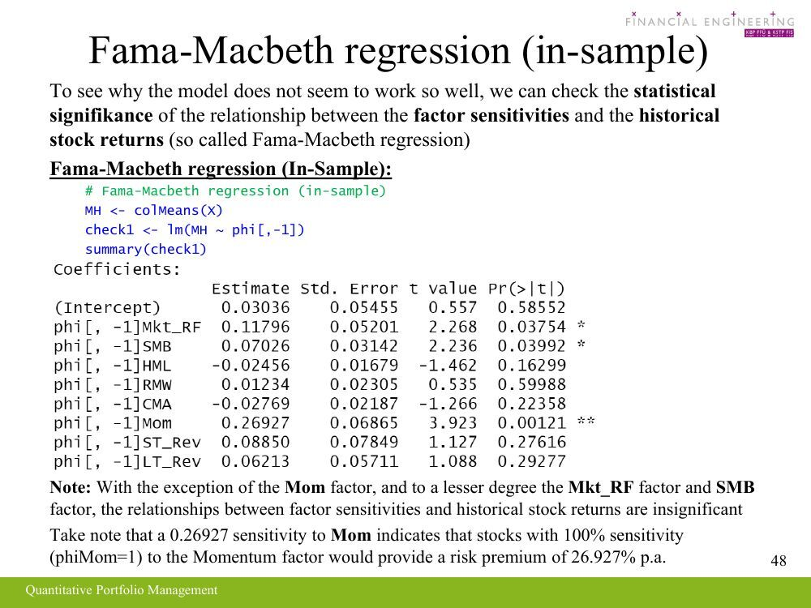
summary(lm) in-sample, koeficienty a t-hodnoty u osmi faktorů. Odnést si: významný je jen Mom, trochu Mkt_RF a SMB.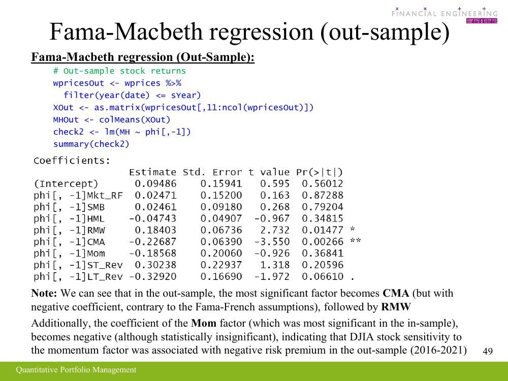
MHOut (a filtr year(date) <= sYear vybírá in-sample roky), ale regrese používá MH. Slajd to přesto popisuje jako výsledek pro roky 2016–2021. Čísla beru tak, jak jsou na slajdu, a nechávám otevřené, zda je kód chybně opsaný. Ověřit na skriptech až budou k dispozici.| Akcie | $\beta_{\text{trh}}$ | $\beta_{SMB}$ |
|---|---|---|
| 1 | 0,8 | −0,2 |
| 2 | 1,0 | 0,1 |
| 3 | 1,2 | 0,4 |
| 4 | 0,9 | 0,6 |
| 5 | 1,1 | −0,3 |
| Měsíc | 1 | 2 | 3 | 4 | 5 |
|---|---|---|---|---|---|
| 1 | 1,2 | 1,9 | 2,6 | 2,4 | 1,3 |
| 2 | −1,5 | −1,6 | −1,8 | −0,9 | −2,0 |
| 3 | 2,0 | 2,3 | 3,4 | 3,1 | 2,1 |
| 4 | 0,4 | 0,9 | 1,0 | 1,4 | 0,5 |
| 5 | 1,0 | 1,1 | 1,9 | 1,6 | 1,3 |
| 6 | −0,6 | −0,4 | −0,7 | 0,2 | −0,9 |
| Měsíc | $\gamma_{0,t}$ | $\lambda_{\text{trh},t}$ | $\lambda_{SMB,t}$ |
|---|---|---|---|
| 1 | 0,448 | 1,254 | 1,487 |
| 2 | 0,285 | −1,942 | 0,807 |
| 3 | 1,034 | 1,376 | 1,413 |
| 4 | 0,722 | −0,004 | 1,014 |
| 5 | −0,006 | 1,310 | 0,634 |
| 6 | 0,981 | −1,568 | 0,893 |
| průměr $\bar\lambda$ | 0,577 | 0,071 | 1,041 |
| $s_\lambda$ | 0,409 | 1,509 | 0,341 |
| t-stat | 3,46 | 0,12 | 7,48 |
Zdroj: skripty Lecture_01_Script_01 až _06, Lecture_02_Script_01 až _03, Lecture_03_Script_01 až _02 (podklady/1BP461/, čísla řádků platí pro tyto soubory) + slidy 1BP453_01 až 04. Zkratky: L3S1 = Lecture_03_Script_01, L2S2 = Lecture_02_Script_02 atd. Výpočty jsem ověřil v R (dplyr, tidyr, MASS) a v Pythonu. Balíky tidyquant a pracma na stroji nebyly, proto jsem jejich logiku ověřoval na vlastních datech a základním R.
Každý skript z přednášek je jiný výřez téhož řetězce. Když znáš řetězec, poznáš, kde se v kódu dělá jaký krok a kde se nejčastěji chybuje:
| Krok | Co se děje | Kde ve skriptech | Hlavní riziko |
|---|---|---|---|
| 1. Data | tq_get, ceny adjusted, dividendy, splity | L3S1 41; L2S2 25, 124–127, 254; L2S3 33 | špatný typ ceny, nestabilní zdroj |
| 2. Čištění a zarovnání | společný začátek, NA → 0, filtr období | L3S1 44–51, 58; L2S3 44 | nezarovnaná období, NA v matici |
| 3. Výnosy | log-cena, rozdíl, exp()-1, cumprod, drawdown | L3S1 53–61; L2S3 41–47; L2S2 289–367 | smíchání log a prostých výnosů |
| 4. Agregace | denní → měsíční (součet log) → prosté | L3S1 87–96; L2S2 380–383 | agregace v čase × přes aktiva |
| 5. Odhad parametrů | spread, matice, colMeans, cov | L3S1 117–134 (L3S2 113–130) | šum v $\hat\mu$, pořadí sloupců |
| 6. Pravidlo / váhy | $1/N$, $1/\sigma$, MV, tangency, Kelly, fmincon | L3S1 162–172; L3S2 171–212 | extrémní váhy, špatný start optimalizace |
| 7. Výnosy strategie | $\mathbf r_t'\mathbf w$ (ret %*% w), kumulace | L3S1 265–281 (L3S2 308–324) | look-ahead, váhy z celého vzorku |
| 8. Vyhodnocení | Sharpe, grafy, in/out-of-sample, t-test | L3S1 174–190, 283–311, 336–344; L2S3 125–133, 244–276 | přeceňování in-sample výsledku |
Skripty z Lecture 1 (R jako jazyk) dodávají nástroje pro jednotlivé kroky: cumsum, cumprod, cummax, diff (kroky 3 a 8), order (výběr nejlepších $N$ aktiv), matice a solve (krok 5 a 6), seznamy (návrat více výsledků najednou) a t.test (krok 8). Najdeš je v tématu 1.
tq_get(symbols, get = "stock.prices") vrátí jeden dlouhý (long) tibble: sloupce symbol, date, open, high, low, close, volume, adjusted (L3S1 41). Dividendy a splity se stahují zvlášť (get = "dividends", "splits", L2S2 124, 127).adjusted. Výnos z držení akcie je cenový pohyb plus dividenda. V close dividenda způsobí propad v den ex-dividend, který není ztráta. Řada adjusted tuto složku zpětně přepočítá, proto se z ní počítá výnos (L3S1 56, L2S3 42). close se hodí na objem v USD, volume * close (L2S2 75). Podrobnosti jsou v tématu 2.min(date)), a jako začátek se vezme nejpozdější z nich, tedy max() (L3S1 44–51). Nejmladší aktivum určuje začátek vzorku pro všechny.NA v matici dává colMeans i cov výsledek NA (ověřeno v R), případně se musí zvolit use = "complete.obs", a to už je tichý filtr dat, který nevidíš.group_by(symbol) (L3S1 54, L2S2 264–367). Detail viz bod 4.# L3S1 44–51: společný začátek
startDate <- data %>% group_by(symbol) %>% summarize(date = min(date))
tStart <- max(startDate$date) # nejmladší aktivum určuje začátek
data2 <- data %>% filter(date >= tStart)tEnd <- today() - 2 (L3S1 38, L3S2 34: today() - 1) znamená, že každé spuštění stáhne jiný konec dat. Navíc je poslední měsíc neúplný, ale v měsíční agregaci (L3S1 88–96) se počítá jako plné pozorování. Stejně tak první měsíc začíná až od tStart. Pro experiment si data zmraz (uložit do souboru, jako to dělá L2S3 80 přes write_xlsx) a konec nastav na poslední celý měsíc. Doplněk: zdroje typu Yahoo upravují adjusted zpětně při každé nové dividendě, takže historie se v čase mírně mění. Nikdy nemíchej řady stažené v různé dny.logprice - lag(logprice), prostý výnos exp(return) - 1, kumulace cumprod(1 + returnS), drawdown cumreturn / cummax(cumreturn) - 1 (L3S1 54–61). V L2S2 289–352 je totéž krok za krokem, včetně chybné varianty „USD výnos“.| Log-výnos $r=\ln(P_t/P_{t-1})$ | Prostý výnos $R=P_t/P_{t-1}-1$ | |
|---|---|---|
| přes čas | sčítá se: $r_{1\to T}=\sum r_t$ | násobí se: $\prod(1+R_t)-1$ |
| přes aktiva (portfolio, 1 období) | nelze: $\sum w_i r_i \ne r_p$ | platí: $R_p=\sum w_iR_i$ |
| v kódu | měsíc: sum(return) (L3S1 93) | portfolio: ret %*% w, po exp()-1 (L3S1 96, 266) |
exp()-1 správně −10,00 %. Druhý příklad: portfolio 50/50 z aktiv s výnosy +50 % a −30 % má výnos $0{,}5\cdot 50-0{,}5\cdot 30=+10\ \%$. Zprůměrování logů dá $e^{0{,}5\ln 1{,}5+0{,}5\ln 0{,}7}-1=+2{,}47\ \%$, což je jiné číslo (geometrický průměr, ne výnos portfolia). Proto L3S1 nejdřív sečte denní logy do měsíce, převede je na prosté (exp(return)-1, L3S1 96) a teprve pak je váží přes aktiva.cumprod(1 + R) je hodnota jedné investované jednotky (začíná na 1). U log-výnosů je to exp(cumsum(r)). Dvě cesty musí dát stejné číslo (kontrola, L2S2 349–367).trans = 'log10', L3S1 295, L2S3 60): na lineární ose dominuje poslední dekáda, protože stejné procento znamená větší vzdálenost při vyšší hladině. Na log ose odpovídá stejné procento stejné vzdálenosti, takže vidíš výkonnost v čase férově.adjusted - lag(adjusted), L2S2 292) závisí na úrovni ceny. Nelze ho porovnávat mezi akciemi ani mezi lety.ifelse(is.na(return), 0, return) (L3S1 58, L2S3 44) nahradí chybějící první výnos nulou, aby cumprod nedal NA. Jednodenní výpadek je zanedbatelný, ale je to vymyšlené pozorování: přidá jeden měsíc/den s nulovým výnosem do průměru a směrodatné odchylky. U krátkých vzorků to zkresluje, proto si u vlastního experimentu první řádek raději odstraň (drop_na).mutate počítá nový sloupec pro všechny řádky najednou, group_by to udělá zvlášť pro každý symbol, summarize sloučí řádky (měsíční součet, L3S1 88–96).c(S, Si), který pokaždé kopíruje vektor (L1S3 138, 166). (3) Kód odpovídá definici (logprice - lag(logprice) je $\ln P_t-\ln P_{t-1}$). Ekvivalenci cyklu a vektoru si ověř na jednoduchém případě: random walk jde cyklem (L1S3 75–78) i cumsum(rnorm(...)) (L1S3 87).Proč group_by PŘED lag
lag() posune sloupec o řádek dolů v rámci skupiny. V tabulce se dvěma akciemi pod sebou (ověřeno v R) vyšel bez group_by(symbol) první řádek akcie B jako $\ln(100/12)=2{,}12$ (212 %!) místo NA, protože „předchozí cena“ patřila akcii A. S group_by(symbol) dostane NA správně.
group_by(sector, symbol, year) %>% mutate(... lag(logprice) ...). lag se pak resetuje každý rok, první obchodní den každého roku dostane NA → 0 a ztratí se výnos z posledního dne minulého roku na první den nového. V mojí simulaci (jedna akcie, 2 roky) vyšel rok 2021 −8,54 % místo správných −9,27 %. Správně je to, co dělá L2S2 450–457: nejdřív group_by(symbol) a lag, a až potom group_by(symbol, year) pro summarize. Pravidlo: lag/diff/cumprod počítej v nejhrubší skupině (symbol), agreguj v jemnější.Pořadí sloupců a široký formát
# L3S1 118–128: z dlouhého formátu do matice (řádky = čas, sloupce = aktiva)
mreturns <- mdata %>% select(symbol, date, returnS) %>%
spread(symbol, returnS) %>%
select(date, symbols) # vrátí pořadí sloupců podle vektoru symbols
ret <- as.matrix(mreturns %>% select(symbols))
mju <- colMeans(ret); covmat <- cov(ret)spread seřadí sloupce abecedně. Ověřeno: pro c("SPY","VNQ","TLT") vyšlo SPY, TLT, VNQ. Řádek select(date, symbols) pořadí vrací podle symbols. Bez něj by vektor vah (v pořadí symbols) násobil jiné sloupce a nedostal bys chybu, jen špatný výsledek. Novější tidyselect doporučuje zápis all_of(symbols) (ověřeno, že funguje stejně).colMeans(ret) dá $\hat{\boldsymbol\mu}$, cov(ret) dá $\hat\Sigma$ (všechny páry najednou), ret %*% w dá výnosy strategie za všechna období jedním násobením $(T\times N)(N\times 1)$. Dlouhý formát (tidy) je lepší na filtrování a grafy, matice na lineární algebru. gather/spread (L2S1 327–342) jsou přechod mezi nimi.summarize po group_by(symbol,year,month) nechá date = max(date) (L3S1 92): označení měsíce posledním obchodním dnem. To je správné datum, ke kterému je výnos známý.summarize a rvar): v L3S1 92–94 stojí return = sum(return), rvar = sum(return^2). Druhý výraz už vidí nový měsíční return, takže rvar je (měsíční součet)$^2$, ne součet druhých mocnin denních výnosů. Ověřeno: denní výnosy 0,01, −0,02, 0,03 dají správně 0,0014, kód dá 0,0004. Sloupec se ve skriptech dál nepoužívá, takže výsledky to nezkazí, ale pro realizovanou varianci by byl špatně (stejná past jako v tématu 2). Oprava: dát rvar před return.| Počet měsíců $n$ | SE (měsíčně) | SE (ročně) | t-statistika $\hat\mu$ |
|---|---|---|---|
| 60 (5 let) | 0,58 % | 7,0 % | 1,38 |
| 120 (10 let) | 0,41 % | 4,9 % | 1,95 |
| 200 (cca 16,7 roku) | 0,32 % | 3,8 % | 2,51 |
ginv × solve
Váhy potřebují $\Sigma^{-1}$. Skripty volají ginv(covmat) (Moore–Penroseova pseudoinverze, MASS), ne solve (L3S1 168–172). Když je $\Sigma$ regulární, jsou výsledky stejné. Když ne (například aktiva s dokonale korelovanými výnosy, nebo víc aktiv než pozorování), solve skončí chybou a ginv vrátí „nějaké“ řešení bez varování. Ověřeno: při 8 aktivech a 5 měsících má cov hodnost 4 a solve selže. Pravidlo: ginv chybu neodstraňuje, jen ji skrývá. Před optimalizací zkontroluj hodnost qr(covmat)$rank a počet pozorování proti počtu aktiv.
ret %*% w_ew (L3S1 266–269) udělá všechny měsíce najednou. Z toho je cumprod(1 + returnS) (L3S1 281).ret %*% w s pevným vektorem $\mathbf w$ znamená, že se portfolio každý měsíc vrací na cílové váhy (rebalancing). Váhy mezi měsíci nedriftují, a obchodování, které to vyžaduje, je zadarmo. Příklad (ručně): 50/50, aktivum A: +20 % a pak −20 %, aktivum B: 0 %. S měsíčním rebalancingem: $1{,}10\times 0{,}90=0{,}99$. Bez rebalancingu (buy and hold): $0{,}5\cdot 1{,}2\cdot 0{,}8+0{,}5=0{,}98$.ret %*% w je správný, protože $\mathbf w$ nezávisí na $t$.lag() před násobením. Zde je nejčastější místo vzniku look-ahead biasu (viz bod 7).Doplněk: reálně se váhy po každém měsíci liší od cílových (drift cen), a rebalancing stojí poplatky a spread. Viz kontrolní seznam v bodě 11.
if (FALSE) { ... } (L3S1 137–160, L3S2 133–157) nastaví sYear <- 2019 a přepočítá mju, covmat, sigma jen z měsíců do roku 2019. Váhy (L3S1 163–172) se pak spočítají z těchto parametrů. Výnosy (L3S1 266–269) se ale násobí celou maticí ret a teprve graf out-of-sample (L3S1 314–346) vezme jen year(date) > sYear. Realizované Sharpe pro out-of-sample je v L3S1 337–344.Nejčastější chyby
if (FALSE) necháš vypnuté, mju a covmat (L3S1 131–134) jsou z celého období a váhy se testují na stejném období. Je to in-sample test (viz téma 3), nic víc.tq_index("DOW") (L2S2 426, 436, 592) vrací dnešní složky indexu. Do výběru se tak dostaly akcie, které se do indexu dostaly díky dobrému vývoji. Slajdy to označují za look-forward bias (deck 02).lag × lead: ve všech skriptech smí mít vstup (signál, faktor, parametr) jen podobu lag() nebo údaje starého před rozhodnutím. lead() smí být jen cíl, který měříš: target = lead(return) (L2S3 93) je záměrný „výsledek po události“. Pokud lead najdeš ve vstupu strategie, je to chyba.Další zásady: dělení musí být chronologické (ne náhodné míchání měsíců). Volba dělicího bodu (sYear, L2S2 537 používá 2015) je sama volba analytika, a proto zkus víc dělicích bodů a sleduj stabilitu. Doplněk: posuvné okno (walk-forward): parametry se znovu odhadují každý rok jen z minulosti, a teprve po tom se váhy použijí na další období.
Analytické vzorce ($w_{MV}$, $w_T$) neumí omezení typu $w_i\ge 0$ nebo $w_i\le 0{,}5$. L3S2 171–212 proto nahradí vzorec hledáním maxima.
# L3S2 178–200 (zkráceno)
mysharpe = function(w, mju, covmat, rf) {
(as.vector(t(w) %*% mju) - rf) / as.vector((t(w) %*% covmat %*% w)^(1/2))
}
objective = function(w) -mysharpe(w, mju, covmat, rf) # minimalizujeme −Sharpe
wmin <- numeric(length(mju)); wmax <- numeric(length(mju)) + 1
Aeq <- t(rep(1, length(mju))); beq <- 1 # součet vah = 1
opt <- fmincon(w_ew, objective, Aeq = Aeq, beq = beq, lb = wmin, ub = wmax)
# kontrola (L3S2 205–209): bez mezí musí vyjít totéž co vzorec w_ta
optTest <- fmincon(w_ew, objective, Aeq = Aeq, beq = beq)lb, ub (L3S2 192–193) jsou u jednotlivých vah, součet 1 jde přes Aeq, beq (L3S2 196–197). Samotné $0\le w\le 1$ ještě neomezuje koncentraci: jedno aktivum může mít 100 %. K omezení koncentrace se dává ub < 1 (např. 0,5).w_ew (L3S2 200) splňuje všechna omezení (součet 1, všechny váhy v mezích). fmincon potřebuje přípustný start. Doplněk: maximalizace poměru kladného lineárního a konvexního čísla (Sharpe při kladném excess výnosu) je kvazikonkávní, proto lokálních maxim hrozí málo. U obecných cílových funkcí (např. po přidání nákladů) se start musí zkoušet z více bodů.w_ta (L3S2 205–209). Mojí kontrolou: na 3 aktivech jsem s optim (Nelder–Mead) a constrOptim v základním R dostal váhy (0,4429; 0,3132; 0,2438), stejné jako vzorec. pracma::fmincon samotný jsem neměl k dispozici, takže jde o kontrolu principu, ne přímo tohoto balíku.objective bere mju, covmat, rf z prostředí, ne z argumentů. Pokud přepočítáš mju z jiného vzorku, ale objective zůstane z jiné session, optimalizuješ jiný problém. Lepší: předávat vše explicitně (funkce s defaulty, L1S4 71–74, jsou na to vzor). Podobně t <<- t2 - t1 v L1S4 140 přepíše globální t (ve skriptu L1S3 je to počet dnů).profit = entry*target, mimo signál 0), má v kumulativním grafu dlouhé rovné úseky. Průměr nebo Sharpe počítaný přes všechny dny je pak ředěný nulami. Porovnávej s alternativou stejného rizika, a ne s nulou.Z nápadu se dělá test v pěti krocích. L2S3 je vzor:
return <= threshold (L2S3 110–114), nebo pondělí s propadem (L2S3 201–207).target = lead(return), výnos den po události (L2S3 93).target jen z dnů, kdy událost nastala, a jeho nejistotu: $t=\bar x/(s/\sqrt n)$ (L2S3 125–133).entry (indikátor), profit = entry*target, kumulace a drawdown (L2S3 249–254).H0: E(target)=0, L2S3 124). Protože denní průměr indexu je kladný, je to mírně shovívavé, ale v řádu setin procenta denně, ne jednotek.nObs, a t-test je optimistický (slajd tvrdí i.i.d. předpoklad, téma 2).Faktorová strategie (L2S2 602–648, 722–779)
lag_*), rozdělí je na kvintily a spočte průměrný výnos každého kvintilu v daném roce (L2S2 626–648, 764–779).mean(return) z log-výnosů akcií (L2S2 640, 771), tedy geometrický, ne výnos portfolia (bod 3). Simulace (30 akcií, denní $\sigma=2\ \%$, tedy cca 32 % ročně): exp(mean(log))-1 = 13,1 %, správné roční portfolio s rovnou vahou (průměr prostých výnosů) = 18,1 %. Rozdíl je „volatility drag“ a roste s rozptylem akcií. Pro pořadí kvintilů je to přijatelné přiblížení, pro absolutní výnos ne. Dále: tEnd = today() (L2S2 597, 716) znamená neúplný poslední rok počítaný jako plný a lag(return) (L2S2 620, 743) posouvá o řádek, ne o rok, takže chybějící rok v řadě by vložil špatný signál. O round × ceiling viz téma 2.Sloupec „Zdroj“ říká, jestli je položka v přednášce (skript, slajd), nebo je to doplněk: obecná praxe, kterou přednáška nepopisuje.
| Položka | Co zkontrolovat | Zdroj |
|---|---|---|
| Look-ahead bias | signál a parametry jen z minulosti; lead jen jako cíl; váhy z in-sample, měření out-of-sample; univerzum k datu rozhodnutí | skripty L3S1 137–160, L2S3 93, L2S2 436; slajdy (look-forward bias, deck 02) |
| Survivorship bias | seznam aktiv musí zahrnovat i ta, která zanikla nebo vypadla z indexu | slajdy: zmíněno jako možné vysvětlení out-of-sample výsledku (deck 04, s. 51) a u equity premium puzzle (deck 03). Skript to neřeší, pojem rozvedený jako doplněk |
| Transakční náklady | odhad nákladů = obrat × náklad na obchod; strategie musí přežít po nákladech. Měsíční rebalancing je na náklady méně citlivý než denní | slajdy deck 04, s. 25–27 (ST_Rev s denním rebalancingem by mělo velký obrat; měsíční je „much less sensitive“). Ve skriptech žádné náklady nejsou, kvantifikace je doplněk |
| Přeučení a data snooping | počítej, kolik variant jsi zkusil; předem zadaná hypotéza; test na datech, která jsi nepoužil; méně volných parametrů | doplněk (přednáška to neformalizuje; blízko je upozornění na in-sample, s. 38 deck 03) |
| Stabilita parametrů | přepočítej váhy z jiného okna; pokud se hodně mění, nevěř jim | slajdy deck 03, s. 48 a 58 ukazují změnu vah mezi 2007–2019 a 2007–2024 (téma 3); posuvné okno je doplněk |
| Velikost vzorku | kolik událostí / měsíců; $\mathrm{SE}$ průměru a Sharpe | skript L2S3 125–133 (nObs, t-test); SE Sharpe je doplněk |
| Reprodukovatelnost | zmrazená data (soubor), pevný konec vzorku, verze balíků; set.seed() u simulací | skript ukládá data do .xlsx (L2S3 80). Ve skriptech není nikde set.seed (ověřeno grep), takže simulace (L1S2 269+, L1S3 77, 87) vyjdou pokaždé jinak. Ostatní je doplněk |
| Okamžik provedení a likvidita | obchoduješ za cenu, kterou jsi mohl znát (zavírací cena dne signálu je často nedostupná dřív, než signál spočítáš); velikost obchodu vs. objem | doplněk; objem v USD se počítá v L2S2 75, 277 |
rvar = sum(return^2) po přepsání return (bod 4). Sloupec se dál nepoužívá.symbols se několikrát přepisuje, platí poslední (SPY, TLT, GLD, DBC, UUP). Tickery GLD, UUP, SVXY nejsou v komentáři 17–29. V L3S2 31–32 platí 7 ETF. Při změně nastavení vždy zkontroluj symbols po načtení.ggsave(paste0(gFolder, ...)), ale gFolder se definuje až později (L3S1 349, L3S2 392). Při zapnutí bloku v čisté session skončí chybou „objekt nenalezen“.ggsave(... c09 ...), ale c09 vzniká jen uvnitř if (FALSE) (L2S2 148–173) → chyba „objekt c09 nenalezen“ (ověřeno logikou v R).lag uvnitř group_by(…, year) ztrácí první denní výnos roku (bod 4).setwd("E:/Users/Ficura/...") selže na jiném stroji. Vlastní cestu nastav, nebo setwd vypusť.weekdays(date) vrací názvy podle jazyka systému (v R s německým nastavením jsem dostal Montag; české pondělí analogicky, česká locale tu nebyla). Filtr wday == "Monday" (L2S3 202, 251) pak vyfiltruje nula řádků. Použij lubridate::wday(date) nebo nastav Sys.setlocale("LC_TIME", "C").data2 používá threshold, xwday, dThreshold z předchozích bloků (globální stav). Když blok nad tím změníš (např. práh −5 % místo −2 %), změní se i strategie. Komentář L2S3 90 u lagreturn2 je chybně „return in the following day“ (je to den $t-2$).lead(return, default = 0) dá poslednímu dni target = 0 místo NA. V průměrech je to další vymyšlené pozorování.is.NaN a is.NA, ale správně je is.nan a is.na (R rozlišuje velikost písmen, ověřeno chybou); L1S1 200 x < - 2 není přiřazení, ale porovnání (ověřeno: vrací FALSE, x se nezmění); L1S2 382 cor(rank(x), rank(x)) je vždy 1 (druhé mělo být rank(y)); L1S5 107 a L1S6 129 jsou popsané jako „Error variance“, ale sigma násobí rnorm, je to směrodatná odchylka; L1S3 106–113 (S[i] <= 0) × L1S3 134 (Si >= 0) mají nekonzistentní hranici; L1S3 ukázka bankrotu u zadaných parametrů ($S_0=100$, $\mu=0{,}5$, $\sigma=3$, 252 dní) v mojí simulaci 20 000 cest nikdy nenastala, aritmetický random walk by ale mohl dát zápornou cenu (log-model ne).as.tibble (L3S1 193, 273), geom_line(size = ...) a funs() (L2S1 300) hlásí v novějších verzích balíků varování (as_tibble, linewidth, list()). Jde o varování, ne chybu výsledku.adjusted ceny, společný začátek všech aktiv a zmrazená data. Poslední měsíc a první den nejsou „plné“ pozorování.lag/diff počítej v nejhrubší skupině (symbol), ne v symbol × rok. Hlídej pořadí sloupců po spread.ginv skrývá singularitu. Zkontroluj hodnost.ret %*% w znamená měsíční rebalancing zdarma. Měnící se váhy: $W_t$ jen z informace do $t-1$.lb/ub, Aeq/beq, přípustný start, kontrola proti analytickému řešení.lead, podmíněný průměr, t-test, robustnost, až pak strategie. Počet pozorování a počet zkoušených variant rozhodují o věrohodnosti.set.seed. Nejde o obsah přednášky.Přednáška zatím nebyla · osnova z úvodní prezentace (1BP453_00_Course_Introduction, s. 4)
Podle osnovy: Stock markets (zbytek): aktivní × pasivní investování, hypotéza efektivních trhů (EMH), fundamentální a technická analýza, testy efektivity, anomálie, statistická arbitráž, global macro, tržní riziková prémie.
d44e18b a starší).Přednáška zatím nebyla · osnova z úvodní prezentace (1BP453_00_Course_Introduction, s. 4)
Podle osnovy: rizika dluhopisových investic, durace a konvexita, časová struktura úrokových sazeb, modely výnosové křivky, likviditní prémie, forwardové sazby, riding the yield curve.
d44e18b a starší).Přednáška zatím nebyla · osnova z úvodní prezentace (1BP453_00_Course_Introduction, s. 4)
Podle osnovy: měnové riziko, absolutní a relativní parita kupní síly (PPP), reálný měnový kurz, covered a uncovered interest rate parity (CIP, UIP), faktorové modely měnových kurzů.
d44e18b a starší).Přednáška zatím nebyla · osnova z úvodní prezentace (1BP453_00_Course_Introduction, s. 4)
Podle osnovy: investování s futures, rozdíl forward × futures, zajištění portfolia akcií a dluhopisů, rovnováha spekulantů a arbitražérů, rovnovážná cena futures, contango × normal backwardation.
d44e18b a starší).Přednáška zatím nebyla · osnova z úvodní prezentace (1BP453_00_Course_Introduction, s. 4)
Podle osnovy: put-call parita, Black–Scholes, binomické stromy, metoda Monte Carlo, metoda konečných diferencí.
d44e18b a starší).Přednáška zatím nebyla · osnova z úvodní prezentace (1BP453_00_Course_Introduction, s. 4)
Podle osnovy: greeks (delta, gamma, vega, theta, rho), hedging opčního portfolia, opční investiční strategie.
d44e18b a starší).Přednáška zatím nebyla · osnova z úvodní prezentace (1BP453_00_Course_Introduction, s. 4)
Podle osnovy: implikovaná volatilita, volatility surface, model-free volatilita, volatility risk premium.
d44e18b a starší).Přednáška zatím nebyla · osnova z úvodní prezentace (1BP453_00_Course_Introduction, s. 4)
Podle osnovy: alternativní stochastické modely (CEV, IVF, Heston, SABR), oceňování exotických opcí.
d44e18b a starší).